5 Analisi delle Componenti Principali
L’Analisi delle Componenti Principali (PCA, Principal Component Analysis) riassume molte variabili quantitative legate fra loro in poche variabili nuove, le componenti principali, costruite in modo da perdere il meno possibile delle differenze fra le unità osservate. Nelle ricerche di mercato è lo strumento di riferimento per disegnare mappe di posizionamento di marche e prodotti e per costruire indicatori sintetici a partire da batterie di domande.
Il capitolo spiega la PCA a parole e con i grafici, con una sola formula, e segue l’output del modulo AnalisiMercato su un unico esempio, le venti marche di yogurt del caso studio § C-03: per ogni tabella e ogni grafico dice che cosa mostra e come si legge. I passaggi in jamovi sono descritti in § P-21 e nei capitoli che seguono. Chi vuole sapere da dove vengono i numeri trova le formule e le dimostrazioni geometriche nell’approfondimento sulla PCA, in appendice, che è facoltativo.
5.1 A che cosa serve
La PCA ha quattro usi tipici.
- Riassumere molte variabili in poche. Per la PCA l’informazione contenuta nei dati sono le differenze fra le unità osservate, cioè quanto i loro valori cambiano da un’unità all’altra. Ogni componente ne raccoglie una parte, la prima la più grande, e tenendo solo le prime si conserva la parte principale. Nel caso yogurt dieci attributi diventano due componenti che conservano il 79% delle differenze fra le marche. Il restante 21% è il prezzo della semplificazione: quante componenti tenere è una scelta (Sezione 5.4).
- Scoprire la struttura nascosta. La PCA mostra quali variabili si muovono insieme e quali dimensioni stanno dietro a questi legami. Nel caso yogurt le marche giudicate cremose sono giudicate anche saporite, con frutta vera, ben confezionate, naturali e tradizionali, e sono le più care: dietro a otto attributi c’è una sola dimensione, la qualità percepita contrapposta alla convenienza, che nessuna domanda del panel chiede in modo esplicito. La struttura è «nascosta» perché nessuna variabile la misura direttamente: emerge solo da come le variabili variano insieme. Le componenti, però, descrivono come variano insieme le variabili osservate: non sono un modello di variabili latenti come l’analisi fattoriale.
- Ottenere variabili incorrelate. In una regressione, variabili esplicative molto correlate fra loro (multicollinearità) rendono i coefficienti instabili e difficili da interpretare: il modello non riesce a separare l’effetto di variabili che si muovono insieme. Succede spesso con i giudizi su più attributi di un prodotto. Le componenti principali sono invece incorrelate fra loro: usate come variabili esplicative al posto di quelle originali eliminano il problema, e in cambio i coefficienti si riferiscono alle componenti e vanno letti attraverso di esse. Dopo una rotazione, però, le coordinate che il modulo salva in generale sono correlate (Sezione 5.10).
- Disegnare i dati. Con più di tre variabili la nuvola delle unità non si può disegnare. Il piano delle prime due componenti è la fotografia in due dimensioni che deforma meno le distanze fra le unità: le marche diventano punti, vicini fra loro se hanno profili simili, e gli attributi diventano frecce che indicano in quale direzione crescono. È la mappa di posizionamento (Sezione 5.12). La quota di differenze raccolta dalle due componenti dice quanto la fotografia è fedele nel complesso; quanto lo è per ogni singola marca si controlla con una misura presentata nella Sezione 5.8.
5.2 Il caso yogurt
Il dataset panel_prodotti.csv contiene le valutazioni di venti marche di yogurt da parte di un panel di consumatori su dieci attributi, con punteggi medi da 1 a 10: prezzo, cremosita, intensita_sapore, frutta_vera, salutismo, packaging, naturalita, tradizione, innovazione e convenienza_promo, la convenienza delle promozioni. Un’altra colonna, posizionamento, riporta il posizionamento dichiarato da ogni marca: Premium, Bio, Funzionale o Mass. Non entra nel calcolo delle componenti, e servirà alla fine per controllare la mappa (Sezione 5.11).
prezzo
L’attributo prezzo è codificato come convenienza di prezzo: 1 = caro, 10 = economico. Un valore alto indica una marca economica. Il dataset è sintetico, e i nomi delle marche sono di fantasia e assegnati a caso: non vanno letti come indizi sul posizionamento.
Gli attributi sono fortemente legati fra loro. Il packaging e l’intensità di sapore hanno correlazione 0,91: le marche ben confezionate sono anche quelle giudicate più saporite. La convenienza di prezzo e quella delle promozioni hanno correlazione 0,89, mentre la convenienza di prezzo e il packaging hanno correlazione −0,87: le marche ben confezionate sono care. Le dieci colonne, quindi, non contengono dieci informazioni diverse, ed è la situazione in cui la PCA rende di più.
Nel modulo l’analisi si trova in Analisi → AnalisiMercato → PCA → Analisi delle Componenti Principali. Le impostazioni usate nel capitolo sono:
- Variabili attive (quantitative) → i dieci attributi;
- Variabile identificativa (opzionale) →
marca, che dà il nome alle righe delle tabelle sulle marche; - Standardizza le variabili (z-score) → attivo, come è predefinito: che cosa vuol dire, e che cosa cambia senza, lo spiega la Sezione 5.7;
- Numero di componenti da ritenere → 2;
- Rotazione → Nessuna.
Il primo output è un riquadro di testo che riassume il metodo e le sue opzioni: lo produce l’opzione Descrizione dell’analisi, che si può spegnere quando non serve più. Segue la tabella Impostazioni, che dichiara che cosa il modulo ha fatto davvero.
Impostazioni
| Variabili attive | Osservazioni (n) | Standardizzate | Componenti ritenute | Rotazione |
|---|---|---|---|---|
| 10 | 20 | Sì (matrice di correlazione) | 2 | Nessuna |
Osservazioni (n) conta le unità usate, cioè quelle senza valori mancanti nelle variabili attive: le altre sono escluse. «Matrice di correlazione» è il modo tecnico per dire che le variabili sono state standardizzate; senza standardizzazione la tabella scrive «No (matrice di covarianza)». Rotazione riporta la rotazione davvero applicata: se si chiede una rotazione tenendo una sola componente, per esempio, il modulo non la applica e scrive «Nessuna (Varimax non applicata)». Conviene leggerla sempre.
5.3 L’idea: una retta che raccoglie più differenze possibile
Ogni marca è descritta da dieci numeri, i suoi punteggi sui dieci attributi. Si può immaginarla come un punto in uno spazio con un asse per ogni attributo: con due attributi è un normale grafico a dispersione, con dieci ha dieci dimensioni e non si può disegnare, ma funziona allo stesso modo. Le venti marche formano una nuvola di punti, e la PCA la riassume con delle rette che passano per il suo centro, cioè per la marca media, quella che su ogni attributo ha il valore medio.
- PC1, la prima componente principale. Si fa girare una retta attorno al centro e la si ferma nella direzione in cui i punti, proiettati sulla retta, sono più sparsi. È la direzione in cui le marche differiscono di più, quindi quella che da sola raccoglie più informazione.
- PC2, la seconda. Fra le rette perpendicolari a PC1 si sceglie di nuovo quella lungo cui i punti sono più sparsi. Essere perpendicolare a PC1 vuol dire raccontare qualcosa che PC1 non ha già raccolto.
- Le componenti successive. Ogni nuova retta è perpendicolare a tutte le precedenti e raccoglie le differenze che restano, sempre meno. Con dieci attributi si arriva a dieci componenti, che insieme raccolgono tutte le differenze fra le marche; di solito ne bastano poche.
5.3.1 Che cosa si vede con due variabili
Con due sole variabili la nuvola si può disegnare, e si vedono tutte e due le componenti. La Figura 5.1 usa due variabili simulate e standardizzate, misurate su 150 unità e con correlazione 0,75: la nuvola è allungata in diagonale.
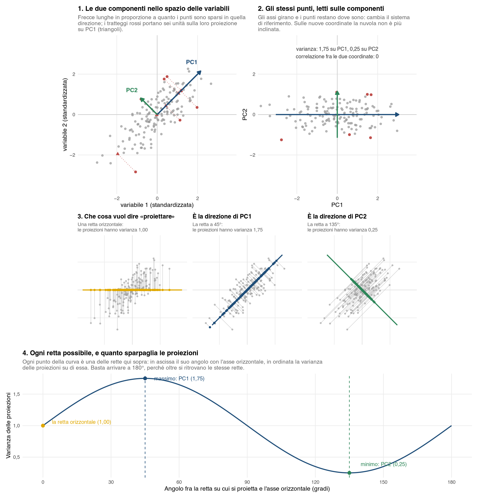
La figura si legge in quattro passi.
- Due direzioni perpendicolari (pannello 1). PC1 segue l’allungamento della nuvola, cioè la direzione in cui i punti sono più sparsi; PC2 le è perpendicolare e attraversa la nuvola per il largo, dove i punti sono poco sparsi. La nuvola ha più o meno la forma di un’ellisse, e PC1 e PC2 ne sono i due assi, il lungo e il corto. Le frecce sono lunghe in proporzione a quanto i punti sono sparsi lungo ciascuna direzione.
- Due punteggi per ogni unità (pannelli 1 e 2). Proiettando un punto ad angolo retto su ciascuna delle due rette si trovano due numeri, i suoi punteggi su PC1 e su PC2. I tratteggi rossi del pannello 1 portano sei unità sulla loro proiezione su PC1; nel pannello 2 le stesse sei unità, in rosso, sono disegnate con i loro due punteggi.
- Gli stessi punti, un altro sistema di riferimento (pannello 2). Le due componenti sono una coppia di assi nuovi, ottenuti girando quelli delle variabili: i punti non si spostano e le distanze fra loro restano le stesse, cambia solo il punto di vista da cui li si guarda. Letta sulle componenti, la nuvola non è più inclinata, e i punteggi su PC1 e su PC2 hanno correlazione zero. È il senso di «raccontare qualcosa che PC1 non ha già raccolto»: sapere dove sta un’unità su PC1 non dice nulla su dove sta su PC2.
- Come si trovano le due rette (pannelli 3 e 4). Proiettare vuol dire portare ogni punto ad angolo retto su una retta che passa per il centro; poi si guarda quanto sono sparse le proiezioni, cioè la loro varianza. Con la retta orizzontale la varianza delle proiezioni è 1, quella della prima variabile; con la retta a 45° sale a 1,75; con la retta a 135°, perpendicolare alla precedente, scende a 0,25. La curva del pannello 4 fa lo stesso conto per tutte le rette, girando di grado in grado: PC1 è la retta del massimo, PC2 quella del minimo.
Le varianze su due rette perpendicolari sommano sempre alla variabilità totale delle due variabili, che qui è 2: 1 e 1 per la retta orizzontale e per quella verticale, 1,75 e 0,25 per PC1 e PC2. Per questo, con due variabili, dove una retta raccoglie il massimo la sua perpendicolare raccoglie il minimo. In termini interpretativi, PC1 raccoglie da sola l’87,5% delle differenze fra le unità e PC2 il restante 12,5%: tenendo solo PC1 si descrive ogni unità con un numero invece che con due, e si perde poco. Con più di due variabili PC2 non è più la retta del minimo: è la più sparsa fra quelle perpendicolari a PC1, e il minimo spetta all’ultima componente.
Nel caso yogurt l’idea è la stessa. La Figura 5.2 la applica a due attributi delle venti marche, e mostra come si leggono i punteggi su PC1.
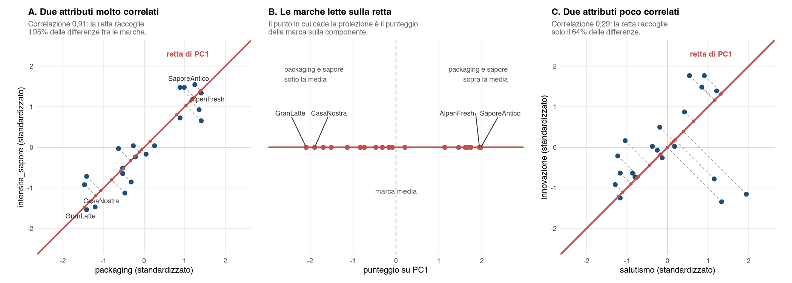
Nel pannello A ogni marca è un punto, e la retta rossa è PC1. Il punto in cui cade la proiezione di una marca sulla retta, mostrato nel pannello B, è il punteggio della marca sulla componente, chiamato anche coordinata: lo zero corrisponde alla marca media, i valori positivi stanno da un lato e quelli negativi dall’altro. A destra ci sono SaporeAntico e AlpenFresh, con packaging e sapore sopra la media; a sinistra GranLatte e CasaNostra, sotto la media in tutti e due. Al posto di due numeri per marca ne basta uno, e si perde poco: la retta raccoglie il 95% delle differenze fra le marche sui due attributi.
Nel pannello C, con il salutismo e l’innovazione, la retta migliore ne raccoglie solo il 64%. I due attributi hanno correlazione 0,29 e raccontano cose in parte diverse: un punteggio unico darebbe valori simili a una marca molto salutista e poco innovativa e a una con il profilo opposto. In termini interpretativi, riassumere più variabili in un solo numero funziona bene solo se raccontano più o meno la stessa cosa delle unità. Per questo la PCA rende di più quando le variabili sono molto correlate, come gli attributi del caso yogurt.
5.3.2 La ricetta di una componente: i pesi
Il punteggio di una marca su una componente si calcola con questa formula, l’unica del capitolo:
\[ \text{PC}_k = v_{1k}\, x_1 + v_{2k}\, x_2 + \ldots + v_{pk}\, x_p \]
Come si legge.
- \(k\) indica la componente (PC1, PC2, …) e \(p\) il numero delle variabili, dieci nel caso yogurt.
- \(x_1, x_2, \ldots, x_p\) sono i valori di una marca sulle variabili, espressi come scarti dalla media e, con la standardizzazione, in deviazioni standard: un valore positivo vuol dire sopra la media, uno negativo sotto.
- \(v_{1k}, v_{2k}, \ldots, v_{pk}\) sono i pesi della componente, uno per variabile. Sono gli stessi per tutte le marche: sono la ricetta della componente. Sono scelti in modo che la somma dei loro quadrati valga 1: così indicano solo la direzione della retta, e conta quanto pesa ogni variabile rispetto alle altre, come le proporzioni degli ingredienti in una ricetta.
- \(\text{PC}_k\) è il punteggio della marca sulla componente, cioè la sua coordinata, diverso per ogni marca.
In parole: si moltiplica il valore di ogni variabile per il suo peso e si sommano i prodotti. Una somma di questo tipo si chiama combinazione lineare, e il calcolo lo fa il modulo.
Nel caso yogurt la ricetta di PC1 dà pesi positivi e quasi uguali, intorno a 0,35, ai sei attributi del prodotto (cremosità, intensità di sapore, frutta vera, packaging, naturalità e tradizione), pesi negativi della stessa grandezza alla convenienza di prezzo e a quella delle promozioni, e pesi vicini a zero al salutismo e all’innovazione. Una marca ha quindi un punteggio alto su PC1 se è sopra la media negli attributi del prodotto e sotto la media nella convenienza, cioè se è percepita di qualità ed è cara.
I pesi non compaiono nell’output del modulo, che mostra al loro posto i loadings e i contributi (Sezione 5.5): si leggono più facilmente e dicono tutto quello che serve per interpretare le componenti.
5.3.3 Quanta informazione raccoglie: gli autovalori
L’autovalore di una componente misura quanto le marche sono sparse lungo la sua retta, cioè quanta informazione la componente raccoglie. Si indica con la lettera greca λ (lambda), con accanto il numero della componente: λ₁ è l’autovalore di PC1, λ₂ quello di PC2, e così via. Per come sono costruite le componenti, la prima ha l’autovalore più alto, la seconda il secondo più alto, e così via fino all’ultima, che ha il più basso. PC1 è la retta lungo cui le marche sono più sparse, e ogni componente successiva cerca fra le direzioni che restano, quindi raccoglie meno di tutte quelle che la precedono. Con variabili standardizzate ogni variabile porta un’informazione pari a 1, e il totale è il numero delle variabili, 10 nel caso yogurt. Un autovalore si legge quindi in confronto al totale: PC1 ha autovalore 6,16, cioè raccoglie da sola tanta informazione quanta ne porterebbero sei attributi presi uno alla volta, il 61,6% del totale.
Il modulo riporta gli autovalori di tutte le componenti, con le loro quote sul totale.
Autovalori e varianza spiegata
| Componente | Autovalore | % varianza | % cumulata |
|---|---|---|---|
| PC1 | 6,163 | 61,63 | 61,63 |
| PC2 | 1,757 | 17,57 | 79,20 |
| PC3 | 1,152 | 11,52 | 90,72 |
| PC4 | 0,359 | 3,59 | 94,31 |
| PC5 | 0,174 | 1,74 | 96,05 |
| PC6 | 0,138 | 1,38 | 97,43 |
| PC7 | 0,092 | 0,92 | 98,35 |
| PC8 | 0,072 | 0,72 | 99,06 |
| PC9 | 0,053 | 0,53 | 99,60 |
| PC10 | 0,040 | 0,40 | 100,00 |
- Autovalore è l’informazione raccolta dalla componente.
- % varianza è la sua quota sul totale: 61,63% per PC1, 17,57% per PC2. «Varianza» è il nome statistico della variabilità, cioè delle differenze fra le unità.
- % cumulata somma le quote dalla prima componente fino a quella della riga: le prime due raccolgono il 79,20%, le prime tre il 90,72%.
Nella tabella gli autovalori scendono da una componente all’altra, e dalla quarta componente in poi ciascuna aggiunge meno del 4%. In termini interpretativi, due rette bastano a raccontare quasi quattro quinti delle differenze fra le venti marche: le dieci colonne dicono, per la maggior parte, due cose. È possibile per quello che mostra la Figura 5.2: gli attributi sono molto correlati, e la nuvola delle marche è allungata in poche direzioni.
5.4 Quante componenti tenere
Il numero di componenti si sceglie con l’opzione Numero di componenti da ritenere, da 1 a 5, con 2 come valore predefinito. La scelta decide quali componenti compaiono nelle tabelle delle variabili e delle osservazioni, quali si possono salvare nel dataset e su quali agisce la rotazione. La tabella degli autovalori e lo scree plot, invece, mostrano sempre tutte le componenti, perché servono proprio a scegliere.
Tre criteri aiutano a decidere, e conviene guardarli insieme.
- La varianza cumulata. Si tengono abbastanza componenti da raggiungere una quota sufficiente del totale: di solito il 70–80% in un’analisi esplorativa, di più se le componenti devono sostituire le variabili in altre analisi. Nel caso yogurt due componenti arrivano al 79,2%, tre al 90,7%.
- Il gomito dello scree plot. Lo scree plot (Figura 5.3) disegna gli autovalori in ordine decrescente. Si cerca il punto in cui la curva smette di scendere ripida e diventa quasi piatta, il «gomito»: le componenti dopo il gomito aggiungono poco. Nel caso yogurt la curva scende fino a PC3 e da PC4 in poi è quasi piatta, quindi il gomito suggerisce tre componenti.
- Il criterio di Kaiser. Si tengono le componenti con autovalore maggiore di 1, cioè quelle che raccolgono più informazione di una singola variabile. Vale solo con variabili standardizzate, quando ogni variabile porta un’informazione pari a 1. Nella didascalia dello scree plot il modulo la chiama «soglia Kaiser λ=1». Nel caso yogurt superano la soglia PC1 (6,16), PC2 (1,76) e PC3 (1,15), mentre PC4 si ferma a 0,36.
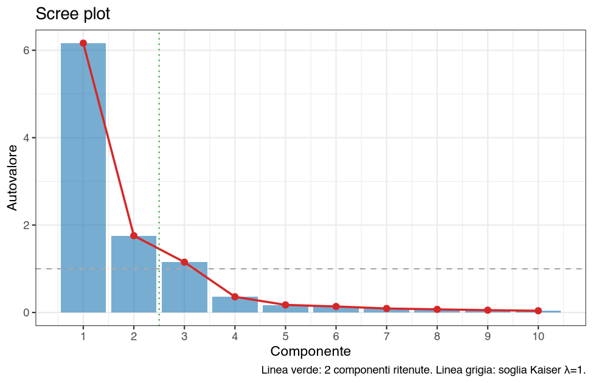
Nello scree plot del modulo la linea grigia tratteggiata della soglia di Kaiser compare solo con le variabili standardizzate, e la linea verde punteggiata si sposta con Numero di componenti da ritenere.
Nel caso yogurt il gomito e il criterio di Kaiser indicano tre componenti, mentre per la varianza cumulata ne bastano già due. Per disegnare una mappa servono due componenti, e la scelta del capitolo è tenerne due, con un’avvertenza: la terza, con l’11,5%, non è trascurabile, e le marche descritte soprattutto da lei saranno rappresentate male sulla mappa. La Sezione 5.8 mostra come accorgersene.
I criteri sono indicazioni, non regole. La scelta tiene conto anche della leggibilità delle componenti: una componente che non si riesce a interpretare serve a poco, anche se supera una soglia. Nelle ricerche di mercato si tengono di solito due o tre componenti, per avere mappe leggibili.
5.5 Le variabili: loadings, contributi e cos²
Per le variabili attive il modulo produce tre tabelle, con una riga per variabile e una colonna per ogni componente ritenuta: le coordinate, chiamate loadings, i contributi e i coseni quadrati (cos²). Rispondono a tre domande diverse.
5.5.1 I loadings
Coordinate delle variabili (loadings)
| Variabile | PC1 | PC2 |
|---|---|---|
| prezzo | −0,922 | −0,307 |
| cremosita | 0,821 | −0,323 |
| intensita_sapore | 0,901 | −0,048 |
| frutta_vera | 0,875 | 0,037 |
| salutismo | 0,159 | 0,775 |
| packaging | 0,882 | 0,220 |
| naturalita | 0,846 | −0,157 |
| tradizione | 0,836 | −0,349 |
| innovazione | −0,232 | 0,808 |
| convenienza_promo | −0,887 | −0,326 |
Il loading di una variabile su una componente dice di quanto cambia in media la variabile, nella sua unità di misura, quando il punteggio delle unità sulla componente sale di una deviazione standard. È l’interpretazione più generale, e vale anche quando le variabili non sono standardizzate. Con variabili standardizzate, come nel caso yogurt, l’unità di misura è la deviazione standard: il loading dice di quante deviazioni standard cambia in media la variabile, e coincide con la correlazione fra i valori della variabile e i punteggi sulla componente. Sta allora fra −1 e 1: il segno dice il verso del legame, e un valore vicino a 1 o a −1 dice che variabile e componente vanno molto d’accordo, cioè salgono e scendono insieme passando da una marca all’altra. tradizione ha loading 0,84 su PC1: una marca che sta una deviazione standard sopra la media su PC1 ha in media un punteggio di tradizione 0,84 deviazioni standard sopra la media. prezzo ha loading −0,92: nello stesso passo la convenienza di prezzo scende di quasi una deviazione standard intera.
Perché i loadings sono uno degli output principali. Sono il ponte fra la componente, un numero astratto, e le variabili osservate: traducono un passo lungo la componente in quello che cambia in ciascuna variabile, e così permettono di dare un nome e un verso alla componente. Nel caso yogurt:
- PC1 ha loadings fra 0,82 e 0,90 con i sei attributi del prodotto, −0,92 con
prezzoe −0,89 conconvenienza_promo, e loadings vicini a zero consalutismo(0,16) einnovazione(−0,23). Ricordando cheprezzoalto vuol dire economico, a destra su PC1 stanno le marche percepite di qualità e care, a sinistra quelle economiche e promozionali: PC1 è l’asse della qualità percepita e del prezzo alto contro la convenienza. - PC2 ha loadings alti solo con
innovazione(0,81) esalutismo(0,78); quelli degli altri attributi stanno fra −0,35 e 0,22. PC2 è l’asse della salute e dell’innovazione, cioè di ciò che distingue un prodotto funzionale da uno tradizionale, indipendentemente dal prezzo.
La Sezione 5.9 riprende questi nomi, li controlla sui dati delle marche e legge le due componenti insieme.
Il verso di una componente è arbitrario: un altro programma potrebbe restituire PC1 con tutti i segni invertiti, e la lettura non cambierebbe, solo che le marche care starebbero a sinistra invece che a destra.
Il loading non va confuso con il peso della Sezione 5.3.2. Il peso dice quanto la variabile entra nella ricetta della componente, il loading di quanto la variabile cambia quando ci si sposta lungo la componente. Nel caso yogurt i pesi di PC1 stanno intorno a 0,35, mentre i loadings stanno intorno a 0,85: PC1 mette insieme otto attributi quasi alla pari, quindi nessuno pesa molto nella ricetta, ma PC1 va molto d’accordo con ciascuno. Attenzione anche ai nomi: in alcuni programmi e manuali la parola loadings indica i pesi, mentre nel modulo e in queste dispense indica sempre le coordinate delle variabili.
Senza standardizzazione il loading non è più una correlazione e può superare 1, ma si legge allo stesso modo, nell’unità di misura della variabile. Nel caso yogurt, rifacendo l’analisi senza standardizzare, prezzo ha loading −2,46 su PC1: quando il punteggio su PC1 sale di una deviazione standard, la convenienza di prezzo scende in media di quasi due punti e mezzo sulla scala da 1 a 10. Che cosa cambia nel resto dell’output senza standardizzazione lo spiega la Sezione 5.7.
5.5.2 I contributi
Contributi delle variabili (%)
| Variabile | PC1 | PC2 |
|---|---|---|
| prezzo | 13,81 | 5,35 |
| cremosita | 10,94 | 5,95 |
| intensita_sapore | 13,18 | 0,13 |
| frutta_vera | 12,44 | 0,08 |
| salutismo | 0,41 | 34,18 |
| packaging | 12,63 | 2,74 |
| naturalita | 11,61 | 1,40 |
| tradizione | 11,34 | 6,95 |
| innovazione | 0,88 | 37,16 |
| convenienza_promo | 12,76 | 6,05 |
Il contributo di una variabile a una componente è la quota dell’informazione raccolta dalla componente, cioè del suo autovalore, che si deve a quella variabile, in percentuale. I contributi a una componente sommano a 100. Come riferimento si usa il contributo medio, 100 diviso il numero delle variabili: 10% nel caso yogurt. Una variabile sopra il 10% guida la componente più della media. Senza rotazione il contributo dipende solo dal peso della variabile nella ricetta: è il modo in cui l’output mostra i pesi, in percentuale e senza segno.
In termini interpretativi, l’autovalore è la torta dell’informazione raccolta dalla componente, e i contributi dicono come se la dividono le variabili. Su PC1 gli otto attributi pesano fra il 10,9% e il 13,8% ciascuno: nessuno domina, e PC1 è una sintesi vera di tutti e otto. Su PC2 innovazione (37,2%) e salutismo (34,2%) fanno da soli il 71%, e nessun altro attributo arriva al 7%. I contributi alti individuano le variabili che costruiscono la componente, e quindi quelle che le danno il nome: qui confermano i nomi suggeriti dai loadings.
5.5.3 I coseni quadrati (cos²)
Coseni quadrati delle variabili (cos²)
| Variabile | PC1 | PC2 |
|---|---|---|
| prezzo | 0,851 | 0,094 |
| cremosita | 0,674 | 0,105 |
| intensita_sapore | 0,812 | 0,002 |
| frutta_vera | 0,766 | 0,001 |
| salutismo | 0,025 | 0,601 |
| packaging | 0,778 | 0,048 |
| naturalita | 0,716 | 0,025 |
| tradizione | 0,699 | 0,122 |
| innovazione | 0,054 | 0,653 |
| convenienza_promo | 0,786 | 0,106 |
Il coseno quadrato (cos²) di una variabile su una componente è la quota dell’informazione della variabile, cioè delle differenze fra le marche su quella variabile, che la componente riproduce. Va da 0 a 1. Sommato su tutte le componenti vale 1, perché tutte insieme riproducono tutto; sommato su due componenti dice quanto la variabile è rappresentata bene dal piano delle due. È il quadrato della correlazione fra variabile e componente, quindi, con variabili standardizzate, il quadrato del loading. Il nome viene dalla geometria, ma per leggerlo basta pensarlo come una quota. Nel cerchio delle correlazioni (Sezione 5.6) il cos² su una componente sarà il quadrato della proiezione della freccia sul suo asse, e quello sul piano il quadrato della lunghezza della freccia.
Nel caso yogurt prezzo ha cos² 0,85 su PC1 e 0,09 su PC2: il piano delle due componenti ne riproduce il 94%, e quello che la mappa dirà sulla convenienza di prezzo delle marche è quasi completo. salutismo ha cos² 0,03 su PC1 e 0,60 su PC2: il piano ne riproduce il 63%, e il resto sta su componenti che la mappa non mostra.
Contributo e cos² a confronto. Le due misure guardano lo stesso legame dai due lati. Il contributo lo guarda dal lato della componente: quanta parte dell’informazione di PC1 viene da tradizione, l’11,3%. Il cos² lo guarda dal lato della variabile: quanta parte delle differenze fra le marche nella tradizione PC1 riesce a riprodurre, 0,70, cioè il 70%. Le due quote sono molto diverse perché PC1 mette insieme otto attributi quasi alla pari: nessuno pesa molto nella sua costruzione, ma li riproduce bene tutti, fra il 67% e l’85%.
- Il contributo dice quanto una variabile partecipa alla costruzione della componente: serve a darle un nome.
- Il cos² dice quanto bene la variabile è rappresentata dalla componente o dal piano: serve a capire quanto fidarsi di quello che i grafici mostrano di lei.
Un contributo alto non implica un cos² alto, e viceversa.
5.5.4 La heatmap dei cos²
L’opzione Heatmap dei coseni² (qualità di rappresentazione) disegna la tabella dei cos² a colori (Figura 5.4): una riga per variabile, una colonna per componente, e una casella tanto più scura quanto più il cos² è alto.
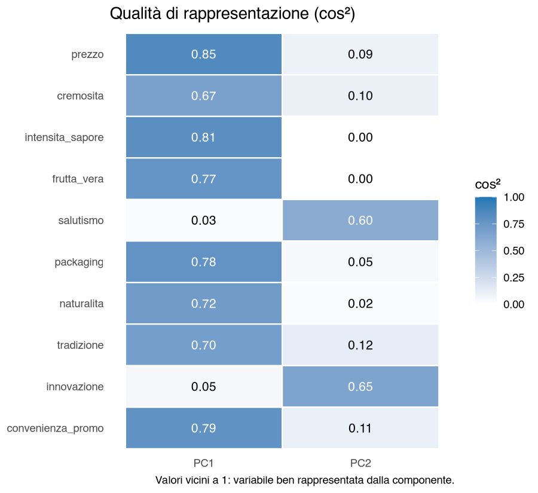
salutismo e innovazione da PC2, ma con caselle meno scure, perché una parte della loro informazione sta su altre componenti.
Una riga con una sola casella scura è una variabile descritta bene da una sola componente; una riga chiara dappertutto è una variabile rappresentata male da tutte le componenti ritenute, e chiede più componenti o un altro piano. Nel caso yogurt otto attributi sono scuri su PC1, mentre salutismo e innovazione stanno su PC2, con 0,60 e 0,65. La heatmap riguarda le variabili: la qualità di rappresentazione delle marche si legge nella tabella dei loro cos² (Sezione 5.8).
5.6 Il cerchio delle correlazioni
Il cerchio delle correlazioni (opzione Cerchio delle correlazioni (variabili)) disegna le variabili nel piano di due componenti, scelte con Componente sull’asse X e Componente sull’asse Y, che sono PC1 e PC2 se non si cambia nulla. Ogni variabile è una freccia che parte dal centro e ha per coordinate le sue correlazioni con le due componenti: con variabili standardizzate sono i loadings della tabella. Ogni asse riporta la quota di informazione della sua componente, e il cerchio ha raggio 1, il valore massimo di una correlazione: nessuna freccia può uscirne.
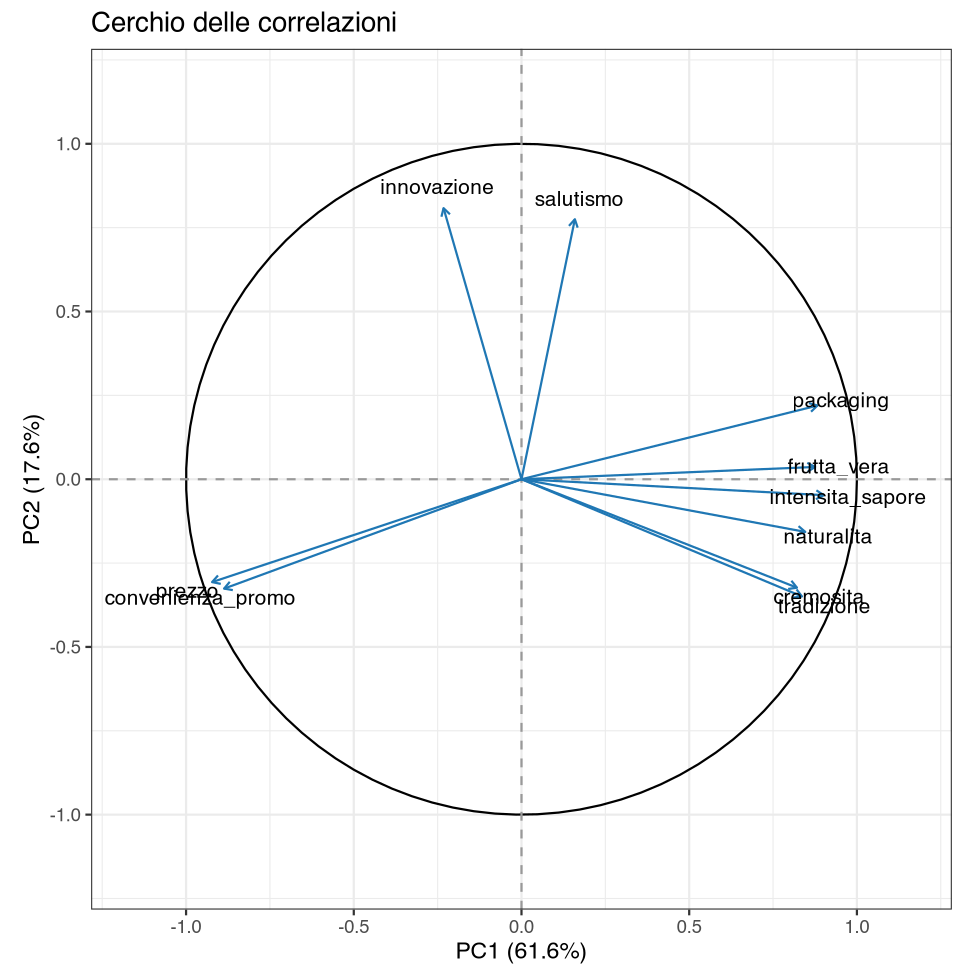
prezzo e convenienza_promo a sinistra; salutismo e innovazione puntano verso l’alto, su PC2.
Il cerchio si legge in tre passi.
- La direzione rispetto agli assi dice a quale componente la variabile è legata. La coordinata della freccia su un asse si trova proiettando la sua punta ad angolo retto su quell’asse, ed è la correlazione della variabile con quella componente (Figura 5.6).
tradizioneha coordinate 0,84 su PC1 e −0,35 su PC2, gli stessi numeri della tabella dei loadings. Una freccia vicina a un asse è legata a quella componente più che all’altra, cometradizionea PC1 einnovazionea PC2; quanto è forte il legame lo dice la coordinata. In termini interpretativi, salendo su PC1 le marche sono in media più tradizionali, mentre salendo su PC2, verso salute e innovazione, lo sono un po’ meno. È la lettura dei loadings fatta con gli occhi.
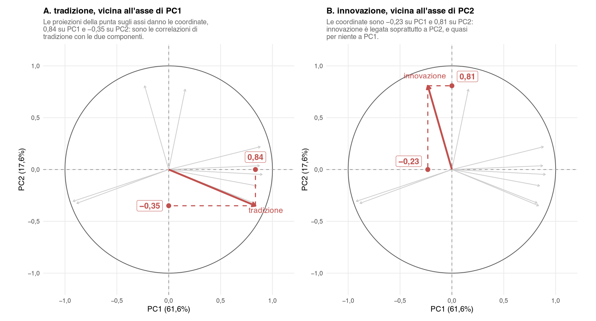
tradizione, vicina all’asse di PC1, ha correlazione 0,84 con PC1 e −0,35 con PC2. B. innovazione, vicina all’asse di PC2, ha correlazione −0,23 con PC1 e 0,81 con PC2. In grigio le frecce delle altre variabili.
- La lunghezza della freccia dice quanto bene il piano rappresenta la variabile. Il quadrato della proiezione della freccia sull’asse di una componente, cioè della sua coordinata, è il cos² della variabile su quella componente. Il cos² sul piano è la somma dei due cos², ed è il quadrato della lunghezza della freccia: la freccia è l’ipotenusa di un triangolo rettangolo che ha per cateti le due proiezioni, e per il teorema di Pitagora il quadrato dell’ipotenusa è la somma dei quadrati dei cateti. Per
tradizione, nella Figura 5.6, le proiezioni sono 0,84 e −0,35: i loro quadrati, 0,70 e 0,12, sono i cos² di tradizione su PC1 e su PC2, gli stessi della tabella dei cos². Sommati danno 0,82, il cos² di tradizione sul piano, che è il quadrato della lunghezza della freccia, circa 0,91. In termini interpretativi, una freccia che arriva quasi al cerchio vuol dire che le differenze fra le marche su quella variabile si vedono quasi tutte nel piano; una freccia corta vuol dire che il piano ne mostra solo una parte, perché la variabile racconta soprattutto qualcosa che le due componenti non raccolgono. Una freccia corta, quindi, non indica una variabile poco importante, ma una variabile che quel piano rappresenta male. Nel caso yogurt la freccia diprezzoè lunga 0,97, quella disalutismo0,79. - L’angolo fra due frecce dice quanto sono correlate le due variabili, se le frecce arrivano quasi al cerchio. Un angolo piccolo indica una forte correlazione positiva, un angolo vicino a 90° una correlazione vicina a zero, un angolo vicino a 180° una forte correlazione negativa.
packagingeintensita_saporesono quasi sovrapposte, e la loro correlazione è 0,91;prezzoepackagingpuntano in versi opposti, con correlazione −0,87.
Gli angoli si leggono solo fra frecce lunghe. Il piano mostra una parte delle variabili, e gli angoli riguardano solo quella parte. La Figura 5.7 lo mostra con due di otto giudizi simulati su un negozio, il servizio (servizio) e la varietà dell’assortimento (varieta_assort). Sul piano di PC1 e PC2 la freccia di varieta_assort è corta, lunga 0,64, perché più di metà della variabile sta sulla terza componente, PC3. Le due frecce formano un angolo di 29°, come se le variabili andassero molto d’accordo, ma la loro correlazione è solo 0,42. Per vedere la parte che manca si sceglie un altro piano, con Componente sull’asse X e Componente sull’asse Y: sul piano di PC2 e PC3 le due frecce sono lunghe tutte e due, e l’angolo si apre a 62°. Ora l’immagine è fedele, e mostra un legame moderato.
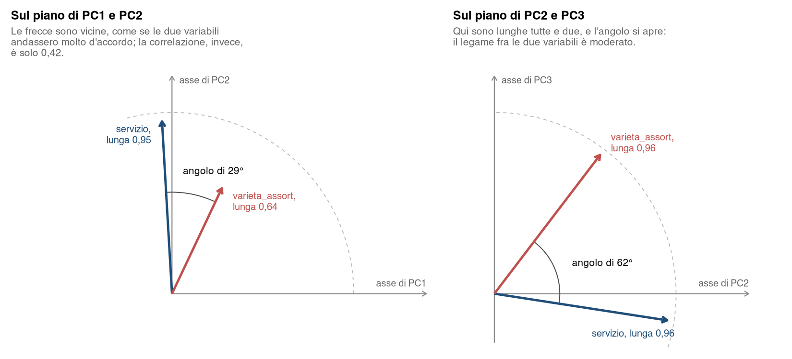
servizio e varieta_assort, sul piano di PC1 e PC2 e su quello di PC2 e PC3. Sul primo piano la freccia di varieta_assort è corta, perché gran parte della variabile sta su PC3, e le due frecce sembrano vicine. Sul secondo sono lunghe tutte e due, e l’angolo fra loro, più ampio, descrive meglio il legame fra le variabili, che è moderato: la correlazione è 0,42.
Nel caso yogurt succede a salutismo e innovazione. Sul piano di PC1 e PC2 sono lunghe 0,79 e 0,84 e formano un angolo di 28°, ma la loro correlazione è solo 0,29: anche frecce di questa lunghezza possono ingannare. Con Componente sull’asse X = 2 e Componente sull’asse Y = 3 arrivano quasi al cerchio, lunghe 0,97 e 0,95, e l’angolo si apre a 69°: la parte che il primo piano non mostrava le oppone. Il piano di PC2 e PC3 mostra anche che cosa racconta la terza componente: contrappone salutismo (−0,58), naturalita (−0,40) e frutta_vera (−0,35) a innovazione (0,50), packaging (0,36) e intensita_sapore (0,34). È la dimensione della naturalità contrapposta all’innovazione. Cambiando piano cambiano le lunghezze delle frecce e gli angoli fra loro, non le correlazioni delle variabili con le componenti: quella di salutismo con PC2 è 0,78 in tutti e due i piani. Senza rotazione gli assi si possono scegliere fra tutte le componenti, anche oltre quelle ritenute; con una rotazione solo fra le ritenute.
Se si potessero guardare tutte e dieci le dimensioni, ogni freccia sarebbe lunga esattamente 1, perché tutte le componenti insieme riproducono tutta l’informazione di ogni variabile. Il cerchio mostra l’ombra delle frecce su un piano, e un’ombra è tanto più corta quanto più la freccia esce dal piano. La lunghezza di una freccia, quindi, non dice quanto la variabile conta, ma quanta parte di lei sta nel piano che si sta guardando.
In termini interpretativi, due frecce lunghe e vicine sono due attributi che salgono e scendono insieme passando da una marca all’altra; due frecce corte possono essere vicine anche se gli attributi vanno poco d’accordo.
5.7 Standardizzare o no
Standardizzare una variabile vuol dire esprimere ogni valore come scarto dalla media, diviso per la deviazione standard della variabile: tutte le variabili hanno così la stessa variabilità. È l’opzione Standardizza le variabili (z-score), attiva se non si cambia nulla, e la scelta conta, perché la PCA cerca le direzioni in cui le unità differiscono di più: senza standardizzazione una variabile che varia molto attira le componenti verso di sé.
Quando standardizzare.
- Le variabili hanno unità di misura diverse, per esempio euro, anni e punteggi: la variabilità di ciascuna dipenderebbe dall’unità scelta, e la spesa in euro dominerebbe tutto il resto.
- Le variabili sono su scale di ampiezza diversa, per esempio un item da 1 a 10 accanto a uno da 1 a 5: senza standardizzazione il primo conterebbe di più senza un motivo sostanziale.
- In generale, quando nessuna variabile deve contare di più solo per come è misurata. Standardizzare non rende uguali i contributi delle variabili, che dipendono da come le variabili si muovono insieme.
Quando si può non standardizzare. Quando le variabili hanno la stessa unità di misura e le differenze di variabilità hanno un significato. Con la spesa mensile in euro in cinque categorie di prodotto, per esempio, le categorie in cui i clienti spendono in modo molto diverso distinguono i clienti più di quelle in cui spendono tutti più o meno lo stesso, ed è giusto che contino di più.
Nel caso yogurt gli attributi sono tutti sulla stessa scala, da 1 a 10, e le due scelte sono entrambe difendibili. La Figura 5.8 mostra quanto cambiano i contributi a PC1.
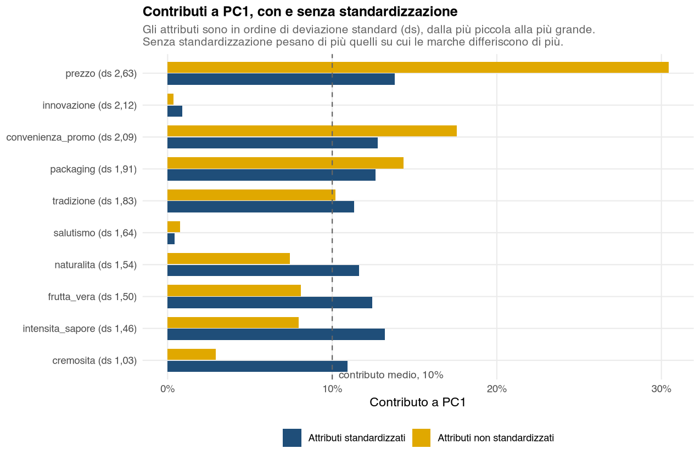
prezzo, l’attributo su cui le marche differiscono di più, passa dal 13,8% al 30,4%, mentre cremosita, quello su cui differiscono di meno, scende dal 10,9% al 2,9%.
Senza standardizzazione PC1 è guidata soprattutto dal prezzo e dalle promozioni, e PC2 quasi solo dall’innovazione, con il 61,7% invece del 37,2%: le componenti raccontano soprattutto gli attributi su cui le marche differiscono di più. Con la standardizzazione ogni attributo ha la stessa voce in capitolo, e le componenti raccontano gli attributi che vanno insieme. Nel caso yogurt si standardizza, perché l’obiettivo è capire quali attributi si muovono insieme, non quali variano di più. Nelle ricerche di mercato standardizzare è quasi sempre la scelta giusta, e lo è sempre quando si mescolano scale diverse.
Senza standardizzazione cambiano anche alcune letture dell’output.
- La tabella Impostazioni riporta «No (matrice di covarianza)».
- La somma degli autovalori non è più il numero delle variabili, ma la variabilità complessiva dei dati, nelle loro unità di misura: il criterio di Kaiser non vale, e lo scree plot non disegna la soglia a 1.
- I loadings non sono più correlazioni: sono nell’unità di misura di ciascuna variabile e possono superare 1. Si leggono con l’interpretazione generale della Sezione 5.5.1, che riporta anche l’esempio di
prezzo, con loading −2,46 su PC1. - Il cerchio delle correlazioni continua a mostrare correlazioni, e le frecce restano dentro il cerchio.
- Nel biplot (Sezione 5.8) le frecce sono allungate in proporzione alla variabilità di ciascuna variabile, senza che questo voglia dire che sono rappresentate meglio.
5.8 Le osservazioni: coordinate, contributi e cos²
Le misure viste per le variabili hanno un corrispondente per le osservazioni, cioè per le unità analizzate, le marche nel caso yogurt. Le tre tabelle compaiono con l’opzione Mostra tabella contributi/coseni² delle osservazioni: Coordinate delle osservazioni, Contributi delle osservazioni (%) e Coseni quadrati delle osservazioni (cos²). Le righe hanno il nome preso dalla Variabile identificativa, qui marca, altrimenti il numero di riga, e sono in ordine decrescente di contributo medio alle componenti ritenute: in testa ci sono le unità che contano di più. Numero massimo di osservazioni da mostrare, 20 se non si cambia nulla, limita le righe, ed è utile quando le unità sono centinaia di rispondenti.
Coordinate, contributi (%) e cos² delle osservazioni (sei marche, con le colonne delle tre tabelle affiancate)
| Marca | Coordinata PC1 | Coordinata PC2 | Contributo PC1 | Contributo PC2 | cos² PC1 | cos² PC2 |
|---|---|---|---|---|---|---|
| ManuFatto | −3,006 | 2,523 | 7,33 | 18,11 | 0,553 | 0,390 |
| DanLat | 3,678 | −1,101 | 10,97 | 3,45 | 0,847 | 0,076 |
| CasaNostra | −3,296 | −1,281 | 8,82 | 4,67 | 0,844 | 0,128 |
| OroBianco | −1,160 | 1,175 | 1,09 | 3,93 | 0,322 | 0,331 |
| EcoMilk | 2,127 | 0,487 | 3,67 | 0,68 | 0,344 | 0,018 |
| KidsYum | 1,652 | −0,293 | 2,21 | 0,24 | 0,303 | 0,010 |
5.8.1 Le coordinate e il biplot
Le coordinate sono i punteggi delle marche sulle componenti, cioè dove ciascuna cade lungo le rette, con lo zero nella marca media. DanLat ha la coordinata più alta su PC1, 3,68: è la marca più spostata verso la qualità percepita e il prezzo alto. CasaNostra, con −3,30, è all’estremo opposto. ManuFatto ha la coordinata più alta su PC2, 2,52: è la marca più orientata a salute e innovazione.
Il biplot (opzione Biplot (osservazioni nel piano principale)) disegna insieme le osservazioni, come punti, e le variabili, come frecce rosse (Figura 5.9). Le frecce sono riscalate per stare nel grafico, quindi contano le loro direzioni e le loro lunghezze relative. Con una Variabile qualitativa supplementare per biplot i punti sono colorati secondo le sue modalità. I nomi delle marche non compaiono: si leggono nella tabella delle coordinate.
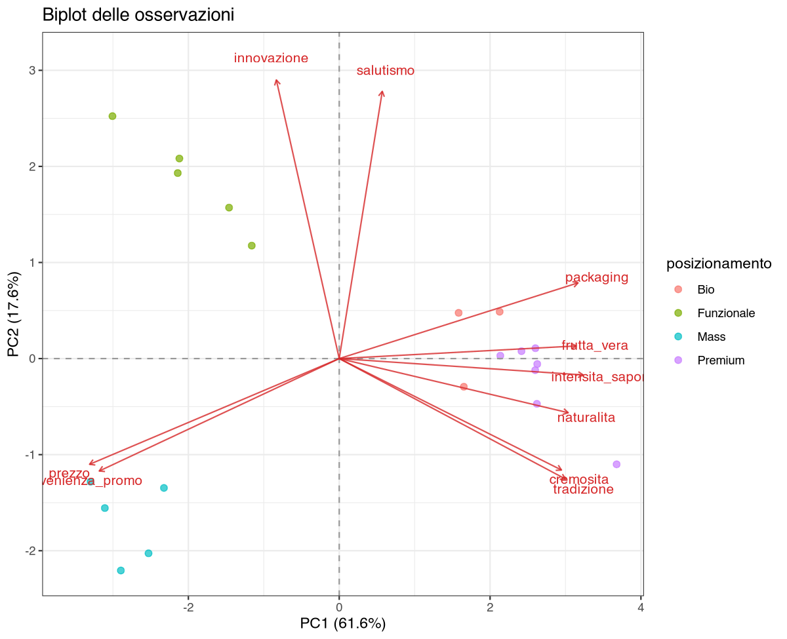
Il biplot si legge con le proiezioni: un punto lontano dal centro nella direzione di una freccia tende ad avere un valore alto su quella variabile, uno nella direzione opposta un valore basso. Conta la proiezione del punto sulla direzione della freccia, non la distanza dalla sua punta. Le marche Premium stanno a destra, nella direzione degli attributi del prodotto; le Mass in basso a sinistra, verso prezzo e convenienza_promo, cioè economiche e promozionali; le Funzionali in alto a sinistra, verso innovazione.
5.8.2 I contributi delle osservazioni
Il contributo di un’osservazione a una componente è la quota dell’informazione della componente che si deve a quell’osservazione, in percentuale. Dipende da quanto l’osservazione è lontana dal centro lungo la componente: conta tanto un’osservazione all’estremo, poco una vicina al centro. I contributi sommano a 100, e il riferimento è il contributo medio, 100 diviso il numero delle osservazioni: 5% con venti marche.
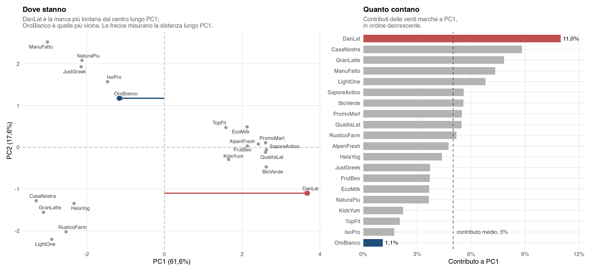
Nella Figura 5.10 DanLat, la marca più lontana dal centro lungo PC1, contribuisce per l’11,0%, più del doppio della media: è la marca che più orienta PC1. OroBianco, la più vicina al centro lungo PC1, contribuisce per l’1,1%: non pesa quasi nulla nella costruzione di PC1, anche se si stacca dal centro lungo PC2. Un’osservazione, infatti, può contare molto per una componente e poco per un’altra: DanLat conta per l’11,0% di PC1 ma solo per il 3,4% di PC2, e la marca che conta di più per PC2 è ManuFatto, con il 18,1%.
Controllare i contributi delle osservazioni serve soprattutto a due cose:
- trovare errori e casi anomali. Un contributo molto più alto della media va controllato prima di interpretare: può essere un caso tipico di un gruppo estremo, ma anche un errore di inserimento o un rispondente che ha risposto senza attenzione, per esempio con risposte tutte agli estremi della scala. È un controllo che guarda tutte le variabili insieme, perché un’osservazione può sembrare normale variabile per variabile e insolita nella combinazione, e completa quello sui valori anomali della preparazione dei dati (§ T-03);
- capire quanto è solida una componente. Se poche osservazioni ne fanno da sole gran parte, la componente descrive quelle più che il campione, e prima di darle un nome conviene rifare l’analisi senza di loro. Togliendo DanLat e rifacendo l’analisi, la quota di PC1 scende dal 61,6% al 60,4%: con venti marche una sola sposta un po’ il risultato, mentre con centinaia di rispondenti il peso di ciascuno è piccolo.
5.8.3 I cos² delle osservazioni
Il cos² di un’osservazione su una componente dice quanta parte della sua posizione la componente riproduce, cioè quanta parte della sua distanza dal centro, che misura quanto l’osservazione si allontana dalla marca media considerando tutti gli attributi insieme. Va da 0 a 1, e sommato su due componenti dice quanto il piano rappresenta bene l’osservazione. Un’osservazione con cos² basso sul piano è rappresentata male: la sua posizione nel grafico non è affidabile, e può sembrare vicina ad altre da cui in realtà è lontana, lungo componenti che il grafico non mostra.
Nel caso yogurt CasaNostra ha cos² 0,84 su PC1 e 0,13 su PC2: il piano ne mostra il 97%, e la sua posizione sulla mappa è affidabile. KidsYum ha 0,30 e 0,01: il piano ne mostra appena il 31%. Le tre marche rappresentate peggio sono KidsYum (31%), EcoMilk (36%) e TopFit (43%), e sono proprio le tre marche Bio. La Figura 5.11 mostra dove sta il resto della loro posizione.
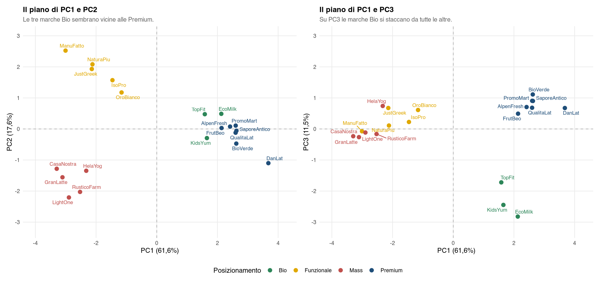
Sul piano di PC1 e PC2 le marche Bio sembrano vicine alle Premium. Su PC3, invece, si staccano da tutte le altre: EcoMilk ha coordinata −2,82, KidsYum −2,45 e TopFit −1,72, mentre le altre marche stanno fra −0,3 e 1,1. PC3 riproduce da sola fra il 46% e il 66% della loro posizione. In termini interpretativi, la mappa direbbe che Bio e Premium occupano la stessa zona del mercato, ed è falso: le marche Bio si distinguono su una terza dimensione, la naturalità contrapposta all’innovazione, che la mappa non mostra. Il caso studio § C-03 racconta che cosa comporta questa scoperta per chi deve prendere una decisione.
Anche per le osservazioni le due misure rispondono a domande diverse: il contributo dice quanto un’osservazione partecipa alla costruzione della componente, il cos² quanto bene la componente, o il piano, la rappresenta. ManuFatto è la marca che contribuisce di più a PC2, con il 18,1%, ma PC2 da sola ne riproduce il 39%: il resto della sua posizione sta su PC1. Prima di commentare la posizione di un’osservazione sulla mappa si controlla il suo cos² sul piano.
5.9 Che cosa raccontano PC1 e PC2 nel caso yogurt
Le sezioni precedenti hanno presentato gli output uno alla volta. Qui si usano insieme per interpretare le prime due componenti del caso yogurt, con un procedimento che vale per ogni analisi: quanto conta ogni componente, che nome darle, quali marche stanno ai suoi estremi, che cosa vuol dire trovarsi in un certo punto del piano e quali cautele servono.
5.9.1 Quanto contano
PC1 raccoglie il 61,6% delle differenze fra le marche, PC2 il 17,6%: la prima conta tre volte e mezzo la seconda. Il mercato, quindi, si divide prima di tutto lungo PC1, e PC2 è una seconda differenza, più piccola ma distinta, perché le due componenti sono incorrelate. Lo si vede anche dalle coordinate: su PC1 le marche vanno da −3,30 a 3,68, su PC2 solo da −2,21 a 2,52.
5.9.2 PC1: la qualità percepita, e il suo prezzo
Gli strumenti visti nel capitolo dicono tutti la stessa cosa.
- Loadings: fra 0,82 e 0,90 con i sei attributi del prodotto (cremosità, intensità di sapore, frutta vera, packaging, naturalità e tradizione), −0,92 con
prezzoe −0,89 conconvenienza_promo, vicini a zero consalutismoeinnovazione. - Contributi: gli otto attributi pesano fra il 10,9% e il 13,8% ciascuno. PC1 è una sintesi equilibrata, e nessun attributo da solo ne decide il significato.
- cos²: PC1 riproduce fra il 67% e l’85% delle differenze fra le marche su ciascuno degli otto attributi.
- Cerchio delle correlazioni (Figura 5.5): le frecce degli attributi del prodotto puntano tutte a destra, quelle di prezzo e promozioni a sinistra.
Ricordando che prezzo alto vuol dire economico, a destra stanno le marche giudicate migliori su tutti gli aspetti del prodotto, che sono anche le più care e le meno promozionali; a sinistra quelle economiche, spesso in promozione e giudicate meno buone. PC1 è l’asse della qualità percepita e del prezzo alto contro la convenienza: in breve, misura quanto una marca è premium. In termini interpretativi, in questo mercato qualità percepita e prezzo vanno insieme: nessuna marca è vista come buona ed economica allo stesso tempo, e chi vuole più qualità paga di più. Salute e innovazione, invece, con PC1 non c’entrano.
Un nome va sempre controllato sui dati. La Figura 5.12, a sinistra, confronta le due marche agli estremi di PC1, DanLat (3,68) e CasaNostra (−3,30), che su PC2 hanno coordinate simili: le loro differenze sono quindi quelle di PC1. DanLat ha punteggi fra 8,3 e 9,4 su cremosità, intensità di sapore, packaging, naturalità e tradizione, e una convenienza di prezzo di 1,3, cioè è molto cara; CasaNostra sugli stessi attributi sta fra 4,3 e 5,9, e ha una convenienza di prezzo di 8,1. Su salutismo e innovazione le due marche quasi coincidono, come dicono i loadings vicini a zero. Il grafico mette gli attributi nell’ordine dei loadings, e mostra la regola: le differenze più grandi stanno sugli attributi con il loading più lontano da zero, positivo o negativo.
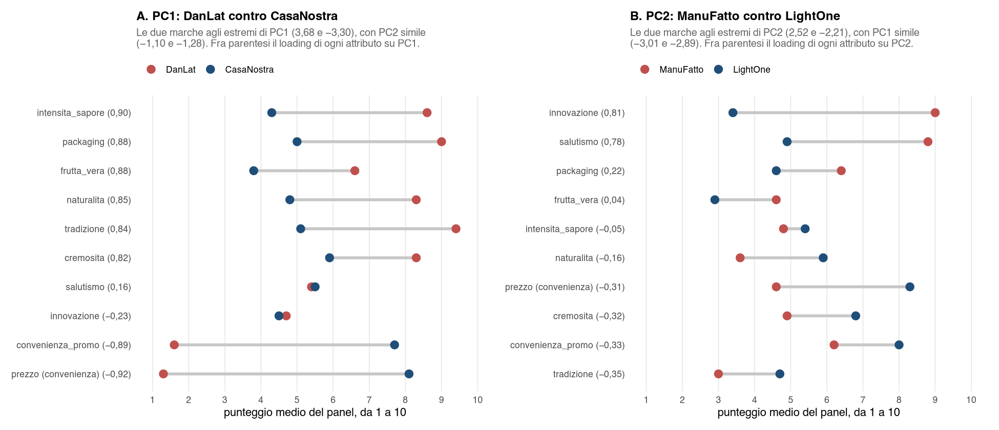
prezzo è la convenienza di prezzo, quindi un valore alto indica una marca economica.
5.9.3 PC2: salute e innovazione
- Loadings: alti solo con
innovazione(0,81) esalutismo(0,78); quelli degli altri attributi stanno fra −0,35 e 0,22. - Contributi: innovazione e salutismo fanno da soli il 71% di PC2, con il 37,2% e il 34,2%.
- cos²: PC2 riproduce il 65% delle differenze fra le marche sull’innovazione e il 60% sul salutismo, meno del 13% su ciascun altro attributo.
- Cerchio delle correlazioni: le frecce di
salutismoeinnovazionepuntano verso l’alto.
PC2 è l’asse della salute e dell’innovazione: in alto stanno le marche che puntano su prodotti funzionali, salutari e innovativi, in basso quelle con un prodotto più tradizionale e di base. I loadings piccoli e negativi di tradizione (−0,35), promozioni (−0,33), cremosità (−0,32) e convenienza di prezzo (−0,31) aggiungono una sfumatura: salendo su PC2 le marche sono anche un po’ meno tradizionali e cremose, e un po’ meno economiche.
Il controllo sui dati, a destra nella Figura 5.12, confronta ManuFatto (2,52) e LightOne (−2,21), che su PC1 stanno entrambe a sinistra. ManuFatto ha 8,8 sul salutismo e 9,0 sull’innovazione, LightOne 4,9 e 3,4. ManuFatto è anche meno tradizionale (3,0 contro 4,7) e meno economica (4,6 contro 8,3), come prevedono i loadings negativi.
Una cautela riguarda proprio i due attributi che danno il nome a PC2. Salutismo e innovazione hanno correlazione solo 0,29 (Sezione 5.6), e PC2 premia le marche che sono insieme salutari e innovative, come le Funzionali, che in media hanno 8,1 sul salutismo e 9,1 sull’innovazione. Una marca salutare ma poco innovativa, come le Bio, che in media hanno 9,2 e 3,7, sta a metà di PC2, e la sua particolarità si vede solo su PC3 (Sezione 5.8).
5.9.4 Le due componenti insieme
Con i nomi delle due direzioni il piano si legge come una mappa (Figura 5.13), e ogni marca si descrive con due frasi: quanto è premium, su PC1, e quanto punta su salute e innovazione, su PC2.
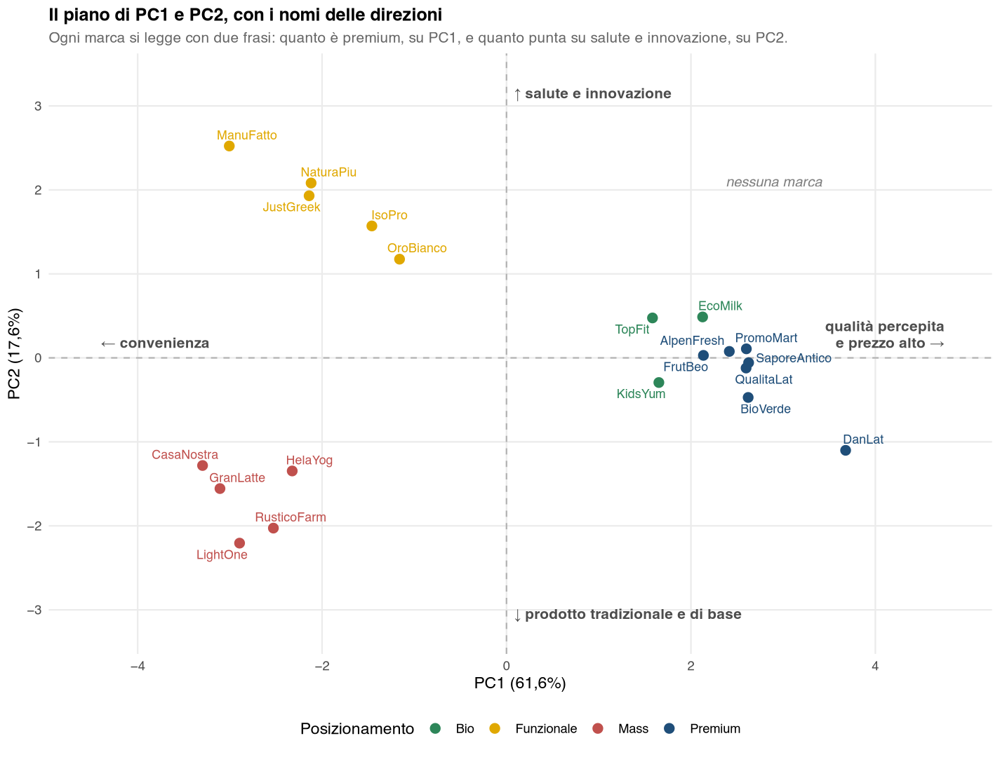
- A destra, vicino all’asse orizzontale, stanno le marche Premium: qualità percepita alta e prezzo alto, senza un orientamento particolare a salute e innovazione. DanLat, la più a destra, sta anche un po’ in basso: è la Premium più tradizionale, con 9,4 sulla tradizione.
- In basso a sinistra stanno le marche Mass: economiche, promozionali, con un prodotto di base, poco salutare e poco innovativo.
- In alto a sinistra stanno le marche Funzionali: prezzo intermedio e un forte orientamento a salute e innovazione, ma meno cremose, meno saporite e meno tradizionali delle Premium.
- In alto a destra non c’è nessuna marca: nessuna unisce qualità percepita e prezzo alto a un forte orientamento a salute e innovazione. È la zona libera discussa nella Sezione 5.12, da verificare prima di trattarla come un’opportunità.
- Le marche Bio sembrano vicine alle Premium, poco più in alto, ma il piano ne mostra meno della metà della posizione (Sezione 5.8): vanno lette anche su PC3.
5.9.5 Le cautele
- I nomi descrivono direzioni, non segni. Il verso delle componenti è arbitrario: con i segni invertiti le marche Premium starebbero a sinistra, e la lettura non cambierebbe.
- I nomi sono un’interpretazione. Riassumono loadings e contributi, e vanno controllati sui dati, come si è fatto con le marche agli estremi.
- Le posizioni sono relative. Lo zero è la marca media del panel: una marca premium è più premium delle altre marche analizzate, non in assoluto.
- Il piano mostra il 79% delle differenze. Per le marche con cos² basso la posizione non è affidabile, e la differenza che il piano non mostra, come quella delle Bio su PC3, può essere proprio quella che conta.
5.10 Le rotazioni
L’opzione Rotazione offre tre scelte: Nessuna, che è quella predefinita, Varimax (ortogonale) e Promax (obliqua). La rotazione si applica dopo aver scelto quante componenti tenere, e serve a rendere più facile dare un nome a quelle componenti.
5.10.1 Perché ruotare: la struttura semplice
Senza rotazione PC1 raccoglie quanta più informazione possibile, e spesso molte variabili risultano legate un po’ a tutte le componenti, che diventano difficili da nominare. La rotazione gira gli assi, dentro lo spazio delle componenti ritenute, per arrivare a una struttura semplice: ogni variabile legata molto a una sola componente e poco alle altre. Un esempio con i loadings di quattro item sulla qualità di un servizio:
| Variabile | Senza rotazione: PC1 | Senza rotazione: PC2 | Dopo la rotazione: PC1 | Dopo la rotazione: PC2 |
|---|---|---|---|---|
cortesia |
0,72 | 0,55 | 0,90 | −0,05 |
tempi |
0,68 | 0,60 | 0,91 | 0,02 |
pulizia |
−0,55 | 0,72 | 0,05 | 0,90 |
comfort |
−0,60 | 0,68 | −0,02 | 0,91 |
Senza rotazione è difficile dare un nome a PC1, che mescola tutto. Dopo la rotazione PC1 è la qualità del personale, PC2 la qualità dell’ambiente.
La rotazione si applica ai loadings. Gli assi che si girano sono quelli del cerchio delle correlazioni, dove ogni variabile è una freccia e le sue coordinate sono i loadings: la rotazione calcola, per ogni variabile, i loadings sui nuovi assi. Conviene ricordare che cosa misurano (Sezione 5.5.1). Il loading di una variabile su una componente dice di quanto cambia in media la variabile, nella sua unità di misura, quando il punteggio sulla componente sale di una deviazione standard; con le variabili standardizzate è la correlazione fra variabile e componente. Nei loadings, quindi, le componenti sono misurate in deviazioni standard, che le variabili siano standardizzate o no: contano tutte allo stesso modo, qualunque sia la loro varianza. Sono due cose diverse: standardizzare le variabili dà varianza 1 a ogni variabile, misurare le componenti in deviazioni standard dà varianza 1 a ogni componente. Per questo, nel cerchio, due assi perpendicolari sono due componenti incorrelate. Varimax gira gli assi tenendoli perpendicolari, e le componenti ruotate, misurate in deviazioni standard come nei loadings, restano incorrelate; Promax li lascia avvicinare, e diventano correlate. Le PC ruotate che il modulo mostra e salva, invece, conservano la variabilità propria di ogni componente, e in generale sono correlate anche con Varimax (Sezione 5.10.6).
La rotazione non cambia l’informazione raccolta dalle componenti ritenute nel loro insieme, né le posizioni delle variabili e delle osservazioni le une rispetto alle altre. Cambia il sistema di riferimento con cui le si legge, e quindi la quota raccolta da ciascun asse, i loadings, i contributi, i cos² e le coordinate.
La Figura 5.14 mostra l’effetto nel cerchio delle correlazioni, con sei item simulati che formano due gruppi di tre. Senza rotazione le frecce stanno in due gruppi in diagonale, a metà strada fra gli assi: ogni item ha un loading intermedio su tutte e due le componenti, e nessuna delle due ha un nome chiaro. Varimax gira gli assi finché ciascuno passa per un gruppo di frecce. Dopo la rotazione item_A, item_B e item_E stanno lungo il primo asse e item_C, item_D e item_F lungo il secondo, con loadings intorno a 0,95 sul proprio asse e vicini a zero sull’altro: ogni componente ruotata si nomina con il suo gruppo di item.
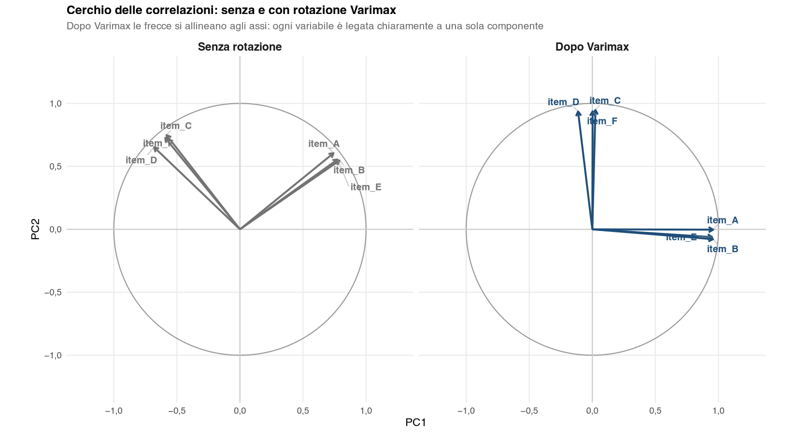
Nella figura sembrano girare le frecce, perché dopo la rotazione il cerchio è ridisegnato sui nuovi assi: è quello che fa il modulo con il Cerchio delle correlazioni — ruotato (Varimax). In realtà girano gli assi, e le frecce restano dove sono, come mostra la Figura 5.15, dove gli assi ruotati sono disegnati sopra le frecce.
5.10.2 Varimax e Promax
- Varimax è una rotazione ortogonale: gli assi ruotati restano perpendicolari fra loro. Fra le rotazioni che li tengono perpendicolari sceglie quella che rende i loadings più polarizzati, cioè grandi su poche componenti e vicini a zero sulle altre. È la rotazione più usata. Le PC ruotate che il modulo mostra e salva, però, in generale sono correlate, con le variabili standardizzate come senza (Sezione 5.10.6).
- Promax è una rotazione obliqua: parte dalla soluzione di Varimax e lascia che gli assi smettano di essere perpendicolari, per avvicinarsi ancora di più a una struttura semplice. Il prezzo è che le componenti ruotate possono risultare correlate, e quella correlazione va letta e riportata.
La Figura 5.15 confronta le due rotazioni su un altro esempio simulato, un questionario di soddisfazione con sei item: tre sulla qualità percepita (qualita, affidabile, innovativa) e tre sulla fedeltà alla marca (fedele, raccomando, riacquisto). Le due dimensioni sono legate, perché chi giudica bene la qualità tende anche a restare fedele, e i due gruppi di frecce formano un angolo più stretto di un angolo retto. Le frecce sono le stesse nei tre pannelli; cambiano gli assi, disegnati in rosso. Varimax li tiene perpendicolari, quindi non può metterli tutti e due al centro di un gruppo: li mette un po’ oltre i due gruppi, e ogni item resta legato in parte anche all’altro asse. Promax lascia che gli assi si avvicinino e mette ciascuno al centro di un gruppo: la struttura è più semplice, ma le due componenti ruotate sono correlate, come le due dimensioni che descrivono.
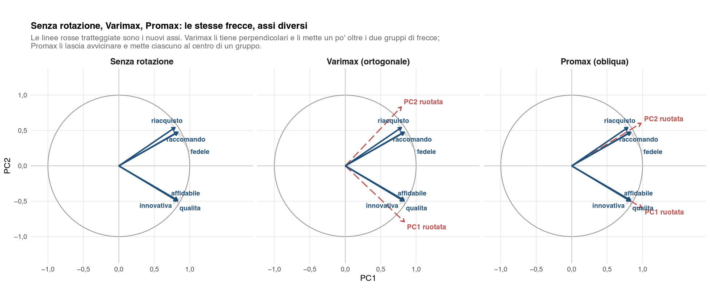
Con Promax il modulo disegna il cerchio delle correlazioni come il pannello di destra, con la prima componente orizzontale: le frecce restano quelle senza rotazione e le due componenti sono linee rosse oblique.
5.10.3 Nel caso yogurt
Con due componenti la rotazione cambia poco: con Varimax i loadings si spostano al massimo di 0,04. La struttura è già semplice, con otto attributi su PC1 e due su PC2, e la rotazione non ha niente da semplificare.
Con tre componenti, quelle suggerite dal gomito e dal criterio di Kaiser, la rotazione invece aiuta. Senza rotazione salutismo e innovazione sono divise fra PC2 e PC3: nella tabella dei cos² salutismo ha 0,60 su PC2 e 0,34 su PC3, innovazione 0,65 e 0,25. È la situazione del pannello di sinistra della Figura 5.14: PC2 le mette insieme, PC3 le oppone, e nessuna delle due componenti ha un nome semplice. Rifacendo l’analisi con Numero di componenti da ritenere = 3 e Rotazione = Varimax, ciascuna delle due ha il suo asse: innovazione ha cos² 0,93 sulla seconda componente ruotata, salutismo 0,95 sulla terza. Con i loadings ruotati le tre componenti si nominano facilmente:
- la prima è ancora la qualità percepita e il prezzo alto contro la convenienza:
packaging0,97,intensita_sapore0,96,tradizione0,79,cremosita0,77,frutta_vera0,68 enaturalita0,62, controprezzo−0,88 econvenienza_promo−0,87; - la seconda è l’innovazione contro la naturalità:
innovazione0,96, contronaturalita−0,64,frutta_vera−0,48,tradizione−0,44 ecremosita−0,43; - la terza è il salutismo, con loading −0,97: il verso è arbitrario, e qui le marche più salutiste stanno dalla parte negativa.
naturalita resta divisa fra la prima e la seconda componente, con cos² 0,39 e 0,41: una struttura semplice perfetta non sempre si raggiunge, e una variabile che resta divisa va letta su più componenti.
5.10.4 Che cosa cambia nell’output
I titoli dichiarano la rotazione. Le tabelle e i grafici riportano il suffisso «— ruotati (Varimax)», «— ruotato (Varimax)» e simili, e la tabella Impostazioni riporta la rotazione applicata.
Autovalori e scree plot non cambiano. Restano quelli della soluzione senza rotazione, perché servono a decidere quante componenti tenere, una decisione che precede la rotazione.
Una tabella nuova: le somme dei quadrati dei loadings. L’informazione raccolta da ogni componente ruotata si legge nella tabella Somme dei quadrati dei loadings dopo la rotazione, nella colonna SS loadings, dove SS sta per sum of squares, somma dei quadrati. Con Varimax e tre componenti:
Somme dei quadrati dei loadings dopo la rotazione
| Componente ruotata | SS loadings | % varianza | % cumulata |
|---|---|---|---|
| PC1 | 5,446 | 54,46 | 54,46 |
| PC2 | 1,984 | 19,84 | 74,29 |
| PC3 | 1,642 | 16,42 | 90,72 |
Il totale è il 90,7%, lo stesso delle prime tre componenti senza rotazione (61,6%, 17,6% e 11,5%): la rotazione non aggiunge né toglie informazione, la ridistribuisce fra gli assi in modo più equilibrato. Le quote si possono sommare perché riguardano le componenti ruotate misurate in deviazioni standard, come nei loadings, e con Varimax queste restano incorrelate. Le PC ruotate che il modulo mostra e salva sono invece correlate (Sezione 5.10.6): calcolate su di loro, le quote conterebbero due volte l’informazione in comune. Le componenti ruotate sono numerate in ordine di informazione raccolta, e gli assi dei grafici riportano la quota ruotata, per esempio «PC2 (19.8% ruotata)». Con Varimax anche le tre tabelle delle osservazioni sono calcolate sugli assi ruotati.
Con Promax cambiano altre quattro cose.
- Nella tabella delle SS loadings le colonne delle percentuali sono vuote: le componenti sono correlate, una parte dell’informazione è in comune fra loro, e sommarne le quote la conterebbe due volte. Per lo stesso motivo gli assi dei grafici riportano solo «PC1 (ruotata)», senza percentuale.
- Compare la tabella Correlazioni fra le componenti ruotate (Φ), dove Φ, la lettera greca «fi», è solo il nome della tabella: riporta la correlazione fra ogni coppia di componenti ruotate. Un valore vicino a 0 vuol dire che le due componenti sono quasi incorrelate, un valore lontano da 0 che sono legate. Nel caso yogurt, con tre componenti, la prima e la seconda hanno correlazione −0,51: le marche percepite di qualità e care tendono a essere più naturali e tradizionali che innovative. Con due componenti la correlazione è solo −0,14.
- La tabella dei loadings non contiene più correlazioni, ma coefficienti che dicono quanto ogni componente pesa sulla variabile al netto delle altre, e che possono superare 1. Nel caso yogurt, con tre componenti,
packagingha 1,13 sulla prima componente,innovazione1,10 sulla seconda esalutismo−1,01 sulla terza. Anche il cerchio delle correlazioni si legge in modo diverso, come spiega la Sezione 5.10.5. Contributi e cos² delle variabili sono calcolati dalle correlazioni fra variabili e componenti ruotate, che con Promax non coincidono con i coefficienti della tabella. Nella Descrizione dell’analisi i coefficienti della tabella si chiamano pattern matrix e le correlazioni structure matrix. - Contributi e cos² delle osservazioni restano quelli della soluzione senza rotazione, come dice il titolo delle loro tabelle («— soluzione PCA non ruotata»): non vanno confrontati con le coordinate ruotate.
5.10.5 Come si legge il cerchio con Promax
Con Promax le componenti ruotate sono correlate, e nel cerchio delle correlazioni non possono più essere due assi perpendicolari, che vorrebbe dire componenti incorrelate (Sezione 5.10.1). Il modulo disegna il cerchio in due modi, scelti con l’opzione ▸ CERCHIO · Con Promax: quello predefinito lascia le frecce come senza rotazione e disegna le componenti come due assi obliqui; l’altro, Assi perpendicolari, pattern loadings, raddrizza gli assi e sposta le frecce.
Due letture su assi obliqui. Su assi obliqui la posizione di una freccia si legge in due modi, che danno numeri diversi (Figura 5.16).
- Ad angolo retto, come nel cerchio classico: dalla punta della freccia si scende ad angolo retto su una componente. Il numero che si legge è la correlazione fra la variabile e la componente, e il suo quadrato è il cos² della tabella.
- Con le parallele: dalla punta si va parallelamente a una componente fino all’altra. Il numero che si legge è il loading della tabella, cioè quanto quella componente pesa sulla variabile al netto dell’altra.
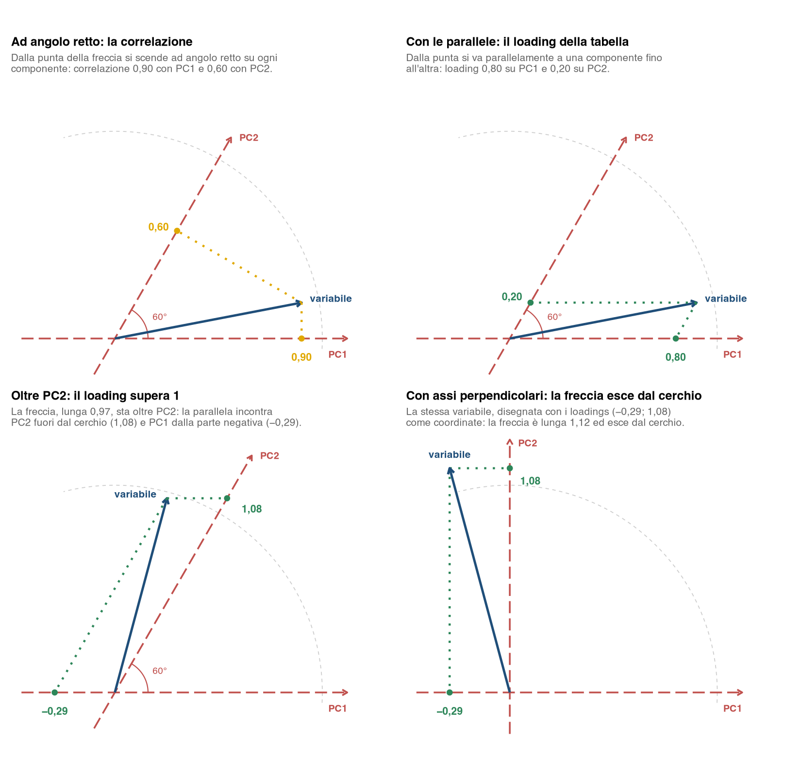
Nell’esempio la variabile appartiene soprattutto a PC1: il suo loading su PC2 è solo 0,20. La sua correlazione con PC2, però, è 0,60, perché PC2 va d’accordo con PC1, e una parte di quella correlazione passa per PC1. Con assi perpendicolari le due letture danno lo stesso numero, ed è per questo che nel cerchio classico non serve distinguerle.
Perché un loading può superare 1. La correlazione misura quanto la variabile va d’accordo con la componente, e sta sempre fra −1 e 1. Il loading, invece, è un peso: quanto la componente pesa sulla variabile al netto dell’altra. Quando le due componenti sono legate, i due pesi si compensano: uno può superare 1 e l’altro diventare negativo, come i coefficienti di una regressione con due variabili esplicative correlate. Succede, per esempio, quando la freccia sta oltre una delle due componenti (Figura 5.16, in basso a sinistra). La freccia è lunga 0,97 e resta nel cerchio, ma la parallela incontra PC2 fuori dal cerchio, a 1,08, e PC1 dalla parte negativa, a −0,29. Le sue correlazioni con le due componenti, lette ad angolo retto, restano invece fra −1 e 1: 0,94 con PC2 e 0,25 con PC1. Nel disegno con assi perpendicolari, che usa i loadings come coordinate, la stessa variabile diventa una freccia lunga 1,12, che esce dal cerchio (in basso a destra): la freccia si allunga perché il disegno non tiene conto del legame fra le due componenti.
Il cerchio predefinito: assi obliqui. Nella Figura 5.17, a sinistra, le frecce sono quelle del cerchio senza rotazione, girate in modo che la prima componente di Promax sia orizzontale, e le linee rosse sono le due componenti. Il cerchio si legge così.
- Le frecce si leggono come nel cerchio classico: la lunghezza dice quanto bene il piano rappresenta la variabile, l’angolo fra due frecce lunghe quanto le variabili sono correlate.
qualitaefedeleformano 61°, e la loro correlazione è 0,45. - L’angolo fra le linee rosse dice quanto sono correlate le componenti: 63°, cioè una correlazione di 0,46, quella della tabella Φ. Più le linee sono vicine, più le componenti sono correlate; se fossero perpendicolari, le componenti sarebbero incorrelate.
- Ad angolo retto su una linea rossa si legge la correlazione con quella componente:
fedeleha 0,46 con PC1, la qualità percepita (puntini arancio). - Con le parallele si leggono i loadings della tabella:
fedelesta quasi sopra la linea di PC2, e la parallela a PC2 condotta dalla sua punta incontra PC1 quasi nell’origine, quindi il suo loading su PC1 è 0,03.
In termini di ricerche di mercato: chi è fedele alla marca tende anche a giudicarne bene la qualità, e infatti fedele ha correlazione 0,46 con la componente della qualità; ma la fedeltà non è un pezzo della qualità percepita, perché il suo loading su quella componente è quasi zero. Sono due dimensioni distinte e legate fra loro, e il legame si legge nell’angolo fra le linee rosse.
Con più di due componenti ritenute il cerchio mostra il piano delle due componenti scelte: le letture ad angolo retto restano le correlazioni, mentre i loadings vanno letti nella tabella.
Il cerchio con assi perpendicolari. Con l’opzione Assi perpendicolari, pattern loadings il modulo fa la lettura con le parallele al posto nostro: raddrizza gli assi e usa come coordinate delle frecce i loadings della tabella (Figura 5.17, a destra). Ogni gruppo di frecce sta lungo il proprio asse, ed è comodo per dare un nome alle componenti. In cambio le altre letture del cerchio classico non valgono più:
- le coordinate non sono correlazioni ma pesi, e una freccia esce dal cerchio quando un suo loading supera 1, come la freccia in basso a destra della Figura 5.16; la didascalia del grafico lo avverte;
- il quadrato di una coordinata non è il cos², che viene dalle correlazioni;
- la lunghezza non è la qualità di rappresentazione, che resta quella del cerchio senza rotazione;
- gli angoli fra le frecce non dicono quanto le variabili sono correlate:
qualitaefedeleformano 88°, come se fossero quasi incorrelate, ma la loro correlazione è 0,45; - il legame fra le componenti non si vede: sta nella tabella Φ.
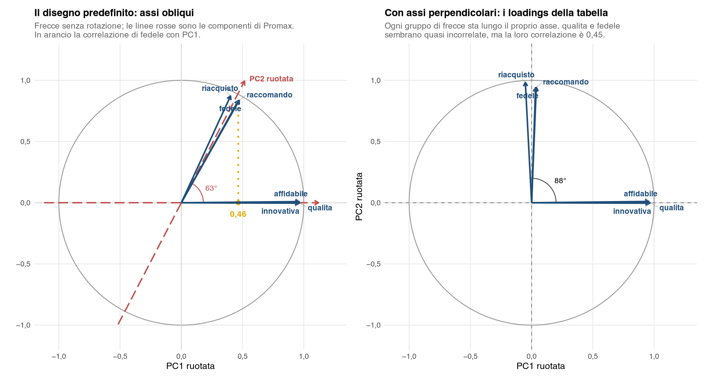
| Che cosa si legge | Assi obliqui (predefinito) | Assi perpendicolari |
|---|---|---|
| Lettura ad angolo retto su un asse | correlazione con la componente; il quadrato è il cos² | loading della tabella |
| Lettura con le parallele | loading della tabella | loading della tabella |
| Lunghezza di una freccia | qualità di rappresentazione | non si legge |
| Angolo fra due frecce | correlazione fra le variabili | non si legge |
| Angolo fra gli assi | correlazione fra le componenti (Φ) | sempre 90°: Φ è nella tabella |
| Frecce fuori dal cerchio | mai | quando un loading supera 1 |
| Serve soprattutto a | leggere correlazioni e legame fra le componenti | dare un nome alle componenti |
5.10.6 Le coordinate delle osservazioni dopo la rotazione
Senza rotazione le coordinate delle osservazioni su due componenti diverse sono incorrelate: sapere dove sta un’osservazione su PC1 non dice nulla, in media, su dove sta su PC2. Dopo una rotazione, sia con Varimax sia con Promax, le coordinate che il modulo mostra nella tabella e salva nel dataset, cioè le PC ruotate, in generale diventano correlate, sia con le variabili standardizzate sia con quelle nelle unità di misura originali. La Figura 5.18 lo mostra con le 250 osservazioni del questionario di soddisfazione della Figura 5.15, analizzate con le variabili standardizzate.
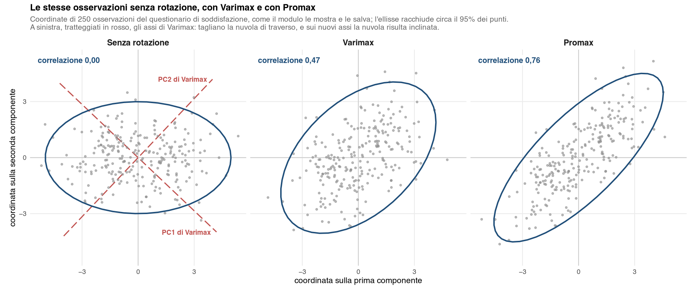
Perché succede. Senza rotazione gli assi seguono la forma della nuvola delle osservazioni: PC1 è la direzione in cui la nuvola è più allungata e PC2 le è perpendicolare, quindi la nuvola non è inclinata rispetto agli assi. La rotazione, invece, sceglie gli assi guardando le variabili, per allinearli ai gruppi di frecce del cerchio delle correlazioni, e non la forma della nuvola. Le osservazioni restano dove sono; sugli assi ruotati, però, la nuvola risulta inclinata, e una nuvola inclinata vuol dire coordinate correlate: nel questionario chi ha una coordinata alta sulla prima componente ruotata tende ad averla alta anche sulla seconda. Con Promax si aggiunge un secondo motivo, perché gli assi non sono più nemmeno perpendicolari, e la correlazione cresce ancora. Standardizzare le variabili non cambia le cose. Dà a ogni variabile la stessa variabilità lungo il proprio asse, ma la nuvola diventa rotonda solo se le variabili sono anche incorrelate, e in quel caso la PCA non avrebbe niente da trovare. Se sono correlate, la nuvola resta allungata: nella Figura 5.1 le due variabili sono standardizzate, con correlazione 0,75, e la variabilità è 1 lungo ciascuna variabile, ma 1,75 lungo PC1 e 0,25 lungo PC2. Su quella nuvola soltanto PC1 e PC2 danno coordinate incorrelate: letta sugli assi delle due variabili, per esempio, ridà la loro correlazione, 0,75. La nuvola diventa rotonda, invece, dividendo ogni componente per la sua deviazione standard, ed è la versione su cui lavorano i loadings.
E la frase dei manuali? Si legge spesso che con Varimax le componenti ruotate restano incorrelate. È vero per le componenti come le misurano i loadings, in deviazioni standard (Sezione 5.10.1): con Varimax restano incorrelate, con le variabili standardizzate come senza. Sono quelle che salva l’Analisi delle Componenti Principali di jamovi, Analisi → Fattore → Analisi delle Componenti Principali, con l’opzione Salva → Punteggi delle componenti. Il modulo salva invece le coordinate, che conservano le distanze fra le osservazioni e per questo sono correlate. Le due coppie si somigliano molto, nel questionario la correlazione fra l’una e l’altra è 0,97 su ciascun asse, ma non coincidono; la differenza è spiegata, con le formule, nell’approfondimento in appendice.
Con Promax anche le componenti dei loadings sono correlate, secondo la tabella Φ: la correlazione c’è quasi sempre, ma può essere piccola, come nel caso yogurt con due componenti (−0,14). Le coordinate del modulo sommano i due effetti, la nuvola allungata e gli assi obliqui, e di solito sono più correlate di quanto dica la tabella Φ.
Quanto conta nel caso yogurt. Dipende da quanto gli assi si spostano. Con due componenti la rotazione è piccolissima, e la correlazione fra le coordinate è appena −0,06 con Varimax e −0,30 con Promax. Con tre componenti la rotazione è più ampia: le coordinate sulla prima e sulla seconda componente ruotata hanno correlazione −0,45 con Varimax e −0,81 con Promax, dove la tabella Φ riporta −0,51. In termini di posizionamento, le marche con un punteggio alto sulla prima componente ruotata, quella della qualità percepita e del prezzo alto, tendono ad avere un punteggio basso sulla seconda, quella dell’innovazione: sono percepite più naturali e tradizionali che innovative. Misurate sulle marche, le due dimensioni non sono indipendenti. Senza standardizzare le variabili i numeri cambiano, ma non la sostanza: con tre componenti la correlazione fra le coordinate è −0,45 con Varimax e −0,66 con Promax, dove la tabella Φ riporta −0,41.
Che cosa fare. Per descrivere e confrontare le osservazioni le coordinate ruotate vanno bene, purché si sappia che sono correlate. Se invece servono PC incorrelate, per esempio come variabili esplicative in una regressione, ci sono due strade: le coordinate senza rotazione del modulo (Sezione 5.13) oppure, con Varimax, i punteggi delle componenti salvati dall’Analisi delle Componenti Principali del menu Fattore di jamovi.
5.10.7 Quale scegliere
| Situazione | Rotazione |
|---|---|
| Componenti già facili da nominare, come nel caso yogurt con due componenti | Nessuna |
| Componenti difficili da nominare, da leggere su assi perpendicolari | Varimax |
| Coordinate incorrelate da usare in altre analisi | Nessuna |
| Dimensioni che plausibilmente sono legate fra loro, come la qualità percepita e la fedeltà alla marca | Promax, controllando la tabella Φ |
In caso di dubbio si provano Varimax e Promax e si confrontano, guardando la tabella Φ e la leggibilità dei loadings. Se le correlazioni fra le componenti sono piccole, all’incirca sotto 0,20, Varimax è preferibile perché più semplice; se superano all’incirca 0,40, imporre assi perpendicolari probabilmente forza la struttura dei dati. Sono riferimenti indicativi, non soglie. Nel caso yogurt con tre componenti la correlazione di −0,51 fra le prime due componenti ruotate fa preferire Promax; Varimax resta una lettura più semplice, purché si dica che le dimensioni non sono indipendenti. Quando si usa Promax la tabella Φ va riportata nel report.
- Con una sola componente la rotazione non ha senso: il modulo non la applica e lo dichiara nella tabella Impostazioni.
- Quando la struttura semplice non si raggiunge, per esempio con molte variabili legate a più componenti, la rotazione può confondere invece di chiarire.
5.11 Le variabili supplementari
Le variabili supplementari non entrano nel calcolo delle componenti: vengono proiettate dopo, sulle componenti già costruite, per arricchire e controllare l’interpretazione. Le variabili che costruiscono le componenti si chiamano invece attive, e una stessa variabile non può essere attiva e supplementare.
Quantitative supplementari (Variabili quantitative supplementari (opzionali)). Il modulo calcola le loro correlazioni con le componenti e le disegna nel cerchio delle correlazioni come frecce arancioni tratteggiate. Servono soprattutto a validare le componenti con variabili esterne: se il panel avesse anche la quota di mercato delle marche, una freccia lunga nella direzione di PC1 direbbe che le marche percepite di qualità sono anche quelle che vendono di più. Una freccia corta dice che manca un legame lineare con le componenti del piano, non che manchi qualunque legame. Il capitolo § P-24 ne mostra un esempio con il reddito e l’età dei rispondenti.
Qualitative supplementari. Per ogni modalità il modulo calcola il baricentro, cioè la posizione media delle osservazioni che hanno quella modalità, e lo disegna sul piano. Le caselle sono due:
- Variabile qualitativa supplementare per biplot (opzionale): una sola variabile, che colora i punti del biplot; se la mappa di posizionamento è attiva, i baricentri delle sue modalità compaiono anche lì;
- Variabili qualitative per la mappa di posizionamento (opzionali): una o più variabili, i cui baricentri compaiono nella mappa.
Nel caso yogurt la variabile qualitativa è posizionamento, e i baricentri hanno coordinate (2,7; −0,2) per le Premium, (−2,8; −1,7) per le Mass, (−2,0; 1,9) per le Funzionali e (1,8; 0,2) per le Bio. Il posizionamento non è stato usato per costruire le componenti: che i quattro gruppi finiscano in quattro zone diverse del piano è un risultato, e conferma che le componenti colgono la logica del mercato. Per lo stesso motivo una variabile come il gruppo di appartenenza trovato da una cluster analysis va fra le supplementari, non fra le attive: le componenti sarebbero costruite anche su di lei, e ritrovarla nella mappa non confermerebbe niente.
5.12 La mappa di posizionamento
La mappa di posizionamento (opzione Mappa di posizionamento (variabili e baricentri, no osservazioni)) mostra in un unico piano i baricentri delle variabili qualitative supplementari e, con ▸ MAPPA · Mostra vettori variabili attive, le frecce degli attributi (Figura 5.19). ▸ MAPPA · Mostra vettori quantitative supplementari aggiunge le frecce delle quantitative supplementari, mentre ▸ MAPPA · Larghezza e ▸ MAPPA · Altezza regolano le dimensioni dell’immagine. Le singole osservazioni non compaiono: per vederle si usa il biplot.
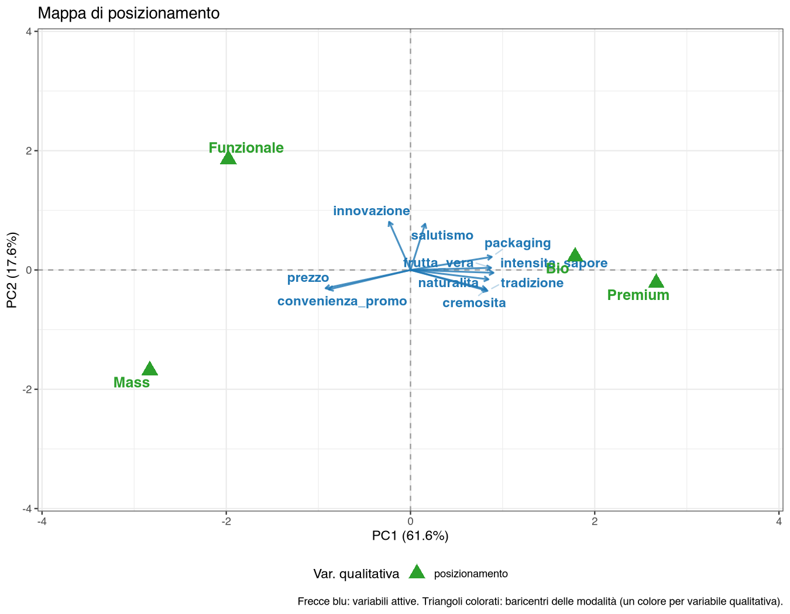
La mappa si legge in tre passi.
- Dare un nome agli assi, con le frecce, i loadings e i contributi: PC1 va dalla convenienza, a sinistra, alla qualità percepita con prezzo alto, a destra; PC2 sale verso salute e innovazione.
- Leggere la posizione dei gruppi. Le marche Premium stanno all’estremo destro: care, cremose, tradizionali, ben confezionate, neutre su salute e innovazione. Le Mass stanno all’estremo opposto, in basso: economiche e promozionali. Le Funzionali stanno in alto a sinistra: prezzo intermedio e il punteggio più alto sull’innovazione. Le Bio stanno vicino alle Premium, poco più in alto, ma sono le marche che il piano rappresenta peggio (Sezione 5.8).
- Leggere le relazioni, con la tabella che segue.
| Che cosa si osserva | Che cosa vuol dire |
|---|---|
| Due marche o due baricentri vicini | Profili simili sugli attributi rappresentati nel piano: può suggerire una concorrenza diretta, da verificare con altri dati |
| Due marche o due baricentri lontani | Profili diversi sugli attributi rappresentati; la distanza da sola non dimostra che si rivolgano a pubblici diversi |
| Una marca spostata nella direzione di una freccia | Valore relativamente alto su quell’attributo: conta la proiezione sulla direzione della freccia, non la distanza dalla punta |
| Due frecce lunghe in versi opposti | Attributi correlati negativamente, come prezzo e packaging |
| Due frecce lunghe perpendicolari | Attributi con correlazione vicina a zero nel piano: una marca può puntare su tutti e due senza rinunciare a uno dei due |
| Un baricentro | La posizione media del gruppo, non quella di ciascuna marca |
Con più variabili qualitative nella stessa mappa servono due cautele. Due baricentri vicini di variabili diverse, per esempio una fascia d’età e un canale d’acquisto, dicono che i due gruppi hanno in media profili simili, non che le due modalità si trovino nelle stesse persone: per saperlo serve una tabella di contingenza fra le due variabili. Due baricentri lontani della stessa variabile dicono che i profili medi dei gruppi sono diversi; per dire quanto la variabile distingue davvero le unità servono anche la dispersione dentro i gruppi e la loro numerosità, che la mappa non mostra.
A che cosa serve la mappa.
- Leggere la concorrenza. Marche vicine hanno profili simili sugli attributi rappresentati e possono essere in concorrenza diretta, ma la concorrenza effettiva dipende anche da prezzo, distribuzione e clienti, e va verificata con i dati di mercato.
- Trovare zone libere (white space). Le aree vuote della mappa sono combinazioni di attributi che nessuna marca del campione presidia. Nel caso yogurt nessun baricentro sta in alto a destra, dove si troverebbe una marca di qualità percepita e cara e orientata a salute e innovazione. Un’area senza baricentri, però, non è necessariamente un’area senza marche, e un’area vuota non è automaticamente un’opportunità: può corrispondere a una combinazione che i consumatori non cercano o che non è sostenibile. Va controllata sulle singole marche, nel biplot, e con dati sulla domanda.
- Pianificare un riposizionamento. Per una marca che vuole spostarsi la mappa indica in che direzione andare, cioè su quali attributi puntare, e quali concorrenti troverà nella nuova zona. La distanza sulla mappa misura quanto i profili sono diversi, non quanto costa cambiare. Rifacendo la mappa a distanza di tempo si controlla se lo spostamento avviene davvero.
I limiti della mappa.
- Mostra solo due componenti: le unità e le variabili con cos² basso sul piano sono rappresentate male, e la loro posizione non va commentata senza controllare i cos², come insegnano le marche Bio.
- È una fotografia, non un film: descrive com’è il mercato oggi, non come ci è arrivato né come cambierà.
- Dipende dagli attributi scelti: cambiando le variabili attive cambiano gli assi, e la mappa va riletta.
- Se i dati vengono da un questionario, rappresenta la percezione dei consumatori, non le caratteristiche oggettive dei prodotti. Una differenza fra percezione e realtà è essa stessa un’informazione utile.
5.13 Salvare i punteggi
Le opzioni da ▸ SALVA · PC1 a ▸ SALVA · PC5 aggiungono al dataset nuove colonne con le coordinate delle osservazioni sulle componenti ritenute, fino al numero scelto in Numero di componenti da ritenere; con una rotazione attiva sono le coordinate ruotate. Le colonne salvate si usano come nuove variabili:
- come indicatori sintetici: nel caso yogurt la coordinata su PC1 è un indice di posizionamento sulla qualità percepita e sul prezzo, un solo numero al posto di otto attributi;
- come base di una cluster analysis (§ T-04). Tenere poche componenti, però, cambia lo spazio delle distanze su cui il clustering lavora, e può scartare componenti piccole che distinguevano bene i gruppi: è una scelta da motivare, non un miglioramento automatico. Conta anche l’opzione Standardizza le variabili della cluster analysis, attiva se non si cambia nulla: sulle coordinate salvate dà a tutte le componenti la stessa variabilità, e quindi lo stesso peso nelle distanze, anche se PC1 raccoglie molta più informazione di PC2. Per conservare le distanze della PCA la si spegne. Così le coordinate Varimax danno gli stessi gruppi di quelle senza rotazione, perché una rotazione ortogonale non cambia le distanze fra le unità, mentre quelle Promax possono darne di diversi;
- come variabili esplicative incorrelate in una regressione, ma solo senza rotazione, perché le coordinate ruotate sono correlate (Sezione 5.10.6).
5.14 La PCA nelle ricerche di mercato
Nelle ricerche di mercato la PCA ha tre usi tipici, spesso combinati.
- Mappe di posizionamento. Marche o prodotti valutati su molti attributi diventano punti di un piano leggibile, con gli attributi come frecce e i gruppi come baricentri.
- Indicatori sintetici. Più domande correlate di un questionario diventano un unico punteggio, per esempio un indice di soddisfazione costruito da dieci item. Nel progetto d’esempio (§ P-26) nove variabili diventano due componenti che conservano il 61,5% della variabilità totale.
- Preparazione di una cluster analysis. Le prime componenti diventano la base della segmentazione, con le cautele viste nella Sezione 5.13.
5.15 In sintesi: dove si legge che cosa
| Output del modulo | Che cosa dice | Dove se ne parla |
|---|---|---|
| Impostazioni | che cosa il modulo ha fatto davvero: osservazioni usate, standardizzazione, componenti, rotazione | Sezione 5.2 |
| Autovalori e varianza spiegata | quanta informazione raccoglie ogni componente, da sola e insieme alle precedenti | Sezione 5.3.3 |
| Scree plot | dove si trova il gomito e quali componenti superano la soglia di Kaiser | Sezione 5.4 |
| Coordinate delle variabili (loadings) | di quanto cambia in media ogni variabile quando il punteggio su una componente sale: nome e verso delle componenti | Sezione 5.5.1 |
| Contributi delle variabili (%) | quali variabili costruiscono ogni componente | Sezione 5.5.2 |
| Coseni quadrati delle variabili (cos²) e heatmap | quanto bene ogni componente, o il piano, rappresenta ogni variabile | Sezione 5.5.3 |
| Cerchio delle correlazioni | le variabili nel piano: lunghezza delle frecce e angoli fra loro | Sezione 5.6 |
| Coordinate delle osservazioni e biplot | dove sta ogni unità | Sezione 5.8 |
| Contributi delle osservazioni (%) | quali unità costruiscono le componenti: casi anomali e solidità | Sezione 5.8 |
| Coseni quadrati delle osservazioni (cos²) | quanto è affidabile la posizione di ogni unità sul piano | Sezione 5.8 |
| Somme dei quadrati dei loadings dopo la rotazione | quanta informazione raccoglie ogni componente ruotata | Sezione 5.10 |
| Correlazioni fra le componenti ruotate (Φ) | solo con Promax: quanto sono legate le componenti ruotate | Sezione 5.10 |
| Mappa di posizionamento | i baricentri dei gruppi rispetto agli attributi | Sezione 5.12 |
| ▸ SALVA · PC1 … PC5 | le coordinate come nuove variabili del dataset | Sezione 5.13 |